<!doctype html>
<html lang="en">
<head>
  <meta charset="utf-8">
  <meta name="viewport" content="width=device-width, initial-scale=1">
  <title>arxiv digest — 2026-09-19</title>
  <style>
:root {
  --bg: #ffffff;
  --fg: #1f2328;
  --muted: #59636e;
  --border: #d0d7de;
  --card: #f6f8fa;
  --link: #0969da;
}
body {
  max-width: 980px;
  margin: 0 auto;
  padding: 2rem 1rem 5rem;
  font-family: -apple-system, BlinkMacSystemFont, "Segoe UI", Helvetica, Arial, sans-serif;
  line-height: 1.55;
  color: var(--fg);
  background: var(--bg);
}
a { color: var(--link); }
img { max-width: 100%; height: auto; }
pre, code { background: var(--card); border-radius: 6px; }
pre { padding: 1rem; overflow-x: auto; }
blockquote { border-left: 4px solid var(--border); padding-left: 1rem; color: var(--muted); }
details { margin: 0.6rem 0; }
summary { cursor: pointer; font-weight: 600; }
.paper-figures-scroll {
  display: flex;
  gap: 1rem;
  overflow-x: auto;
  overscroll-behavior-x: contain;
  padding: 0.75rem 0.25rem 1rem;
  margin: 1rem 0 1.25rem;
  border-top: 1px solid var(--border);
  border-bottom: 1px solid var(--border);
  scroll-snap-type: x proximity;
}
.paper-figure-card {
  flex: 0 0 min(260px, 72vw);
  scroll-snap-align: start;
  background: var(--card);
  border: 1px solid var(--border);
  border-radius: 12px;
  padding: 0.55rem;
}
.paper-figure-card img {
  display: block;
  width: 100%;
  max-height: 240px;
  object-fit: contain;
  background: white;
  border-radius: 8px;
}
.paper-figure-caption {
  display: block;
  margin-top: 0.5rem;
  color: var(--muted);
  font-size: 0.85rem;
}
.figure-strip-hint {
  color: var(--muted);
  font-size: 0.9rem;
  margin-bottom: -0.3rem;
}
</style>
  <!-- MathJax: renders $...$ inline math and $$...$$ display math, plus
       \(...\) and \[...\]. Loaded from the official CDN; works offline
       once cached. Configured to skip code/pre blocks so arxiv IDs that
       look like dollar amounts don't get mangled. -->
  <script>
    window.MathJax = {
      tex: {
        inlineMath: [['$', '$'], ['\\(', '\\)']],
        displayMath: [['$$', '$$'], ['\\[', '\\]']],
        processEscapes: true,
        processEnvironments: true
      },
      options: {
        skipHtmlTags: ['script', 'noscript', 'style', 'textarea', 'pre', 'code'],
        ignoreHtmlClass: 'tex2jax_ignore',
        processHtmlClass: 'tex2jax_process'
      }
    };
  </script>
  <script id="MathJax-script" async
    src="https://cdn.jsdelivr.net/npm/mathjax@3/es5/tex-chtml.js"></script>
</head>
<body>
<header style="background-color: #333; color: white; padding: 15px; margin-bottom: 20px;">
  <h1 style="margin: 0; font-size: 24px;">
    <a href="https://ochelpan.github.io/arXiv_clean/" style="color: white; text-decoration: none;">Main</a>
  </h1>
</header>

<h1>Daily arXiv Report</h1>

<hr>
<p>
<a href="index.html">← Index</a>
 · <a href="papers_02.html">← Previous</a> · <a href="papers_04.html">Next →</a>
</p>
<hr>

<h2>Papers 41–60</h2>
<p><a id="paper-2609.20596"></a></p>
<h3 id="experimental-demonstration-of-finite-size-general-security-via-discrete-modulated-cvqkd-with-real-time-postprocessing"><a href="http://arxiv.org/abs/2609.20596v1">Experimental demonstration of finite-size general security via discrete-modulated CVQKD with real time postprocessing</a></h3>
<p><strong>Authors:</strong> Sven Bodenstedt, Carlos Pascual-García, Nil Canta i Pujol, Martí Sales-Moragues, Mariana Navarro, Pau Gómez Kabelka, Sebastián Etcheverry, Saeed Ghasemi<br>
<strong>Type:</strong> experiment · <strong>Category:</strong> quantum information and computing · <strong>PDF:</strong> <a href="https://arxiv.org/pdf/2609.20596v1">https://arxiv.org/pdf/2609.20596v1</a><br>
<strong>Analysis basis:</strong> full PDF text, analyzed in chunks
<strong>Topic relevance:</strong> <code>QC/QI experiment</code> <strong>3/5</strong> · <code>quantum optics experiment</code> <strong>3/5</strong> · <code>quantum measurements</code> <strong>1/5</strong></p>
<div class="figure-strip-hint">↔ Scroll figures horizontally</div>
<div class="paper-figures-scroll">
<figure class="paper-figure-card">
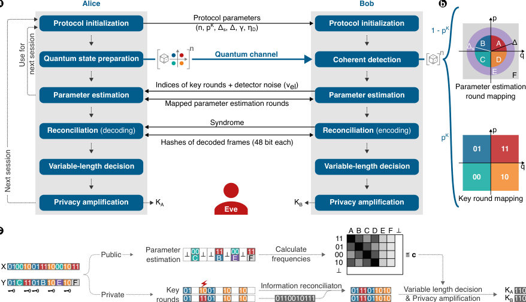
<figcaption class="paper-figure-caption"><b>Fig 1.</b> Fig. 1 Implementation overview. (a) Main steps of the protocol: initialization, quantum state preparation and coherent detection, parameter estimation, reconciliation, VLD, and privacy amplification. Black arrows between Alice and Bob represent an authenticated classical channel, whereas the blue arrow represents the quantum channel. (b) In each round, Alice randomly prepares one of the four coherent states of the QPSK alphabet {00, 01, 10, 11}. Bob then decides, with probability pK, whether to treat the round as a key round. If so, he maps his heterodyne measurement outcome to one of the four QPSK letters according to the quadrant that it occupies in phase space. Otherwise, the round is...</figcaption>
</figure>
<figure class="paper-figure-card">
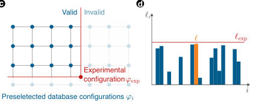
<figcaption class="paper-figure-caption"><b>Fig 2.</b> Fig. 2 Schematic overview of the database approach for the VLD. (a) In a calculation at runtime, the experimen- tally realized configuration φexp needs to be estimated from the measured data and calibrated values before the variables needed for the VLD vexp can be calculated. The whole process takes about 45 min on our experimental con- trol hardware. (b) The pre-computation approach fills a database before the actual experiment. This step is com- putationally expensive and can take days to weeks. At run- time, the calibrated values are used to filter the pre-stored values vi based on validity criteria. For each valid configu- ration, the VLD is performed using the measured data and the...</figcaption>
</figure>
<figure class="paper-figure-card">
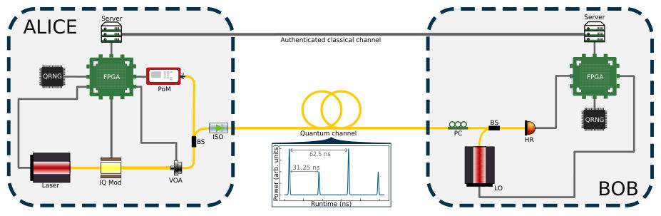
<figcaption class="paper-figure-caption"><b>Fig 3.</b> Fig. 3 Experimental hardware overview. Dark links represent electrical cables, while yellow links represent optical fiber connections. The plot below the quantum channel showcases the presence of both reference and QPSK pulses, with its relative power being exaggerated for better visualization. Acronyms: VOA (Variable Optical Attenuator), IQ Mod (In- Phase and Quadrature component Modulator), BS (Beam Splitter), PoM (Power Meter), FPGA (Field-Programmable Gate Array), QRNG (Quantum Random Number Generator), PC (Polarization Controller), LO (Local Oscillator), HR (Heterodyne Receiver).</figcaption>
</figure>
<figure class="paper-figure-card">
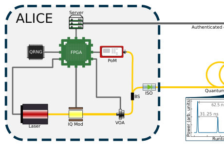
<figcaption class="paper-figure-caption"><b>Fig 4.</b> Fig. 4 (e) shows the resulting secret key rate as a function of distance for the same sessions as in Fig. 4 (b) and (c), obtained by dividing the secret key length by the per-session runtime. At 5 km and n = 108 rounds, the system delivers approxi- mately 10 kbit/s, decreasing to approximately one hundred bits per second at 40 km. Larger block sizes are favored because the SKF grows with n as finite-size penalties shrink towards the asymptotic limit. The per-session runtime is close to linear in n – measurement and LDPC reconciliation both scale with the number of rounds – but the fixed overheads (initialization, VLD, privacy amplifica- tion; together &lt; 3 s) amortize over larger blocks, so...</figcaption>
</figure>
<figure class="paper-figure-card">
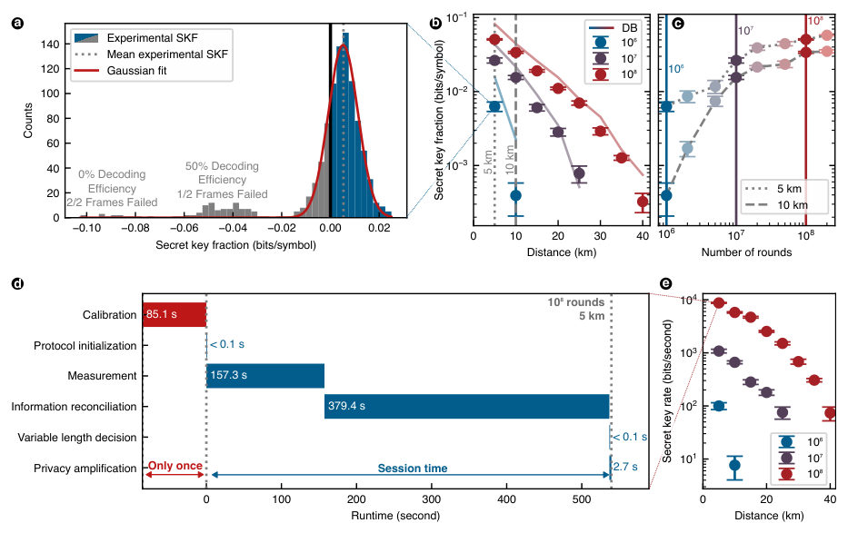
<figcaption class="paper-figure-caption"><b>Fig 5.</b> Fig. 4 Experimental results. (a) Histogram of the experimentally achieved SKF distribution for 5 km and 1 × 106 rounds. For calculating the mean, all negative values are set to zero before averaging. (b) SKF as a function of distance for n = 1×106, 1 × 107, and 1 × 108 rounds. Theoretical values (DB) correspond to the expectation value of the SKF for parameters listed in Tab. 2, calculated for an assumed error correction efficiency of 97 %, a detection efficiency of ηD = 55 %, and an electronic noise level of νel = 77.5 mSNU. As, on average, the parameters for the theoretical values are more favorable than those achieved experimentally, the plotted theoretical SKF typically sits above the...</figcaption>
</figure>
</div>

<p><strong>Summary.</strong> This paper presents the first experimental demonstration of a discrete-modulated CVQKD system achieving finite-size composable security against general attacks. By integrating advanced techniques like variable-length decision and modern entropy accumulation, the system operates in real-time on near-commercial hardware. This advances the practical viability of quantum key distribution by addressing critical security loopholes.</p>
<p><strong>Why it may be interesting.</strong> This work pushes the boundaries of practical quantum communication by tackling the complex theoretical requirement of general security in a physical, real-time experimental setting.</p>
<details>
<summary>Detailed structure</summary>
<p><strong>Main problem.</strong> The primary challenge addressed is experimentally demonstrating finite-size general security for Continuous-Variable Quantum Key Distribution (CVQKD) using discrete-modulated (DM) protocols.</p>
<p><strong>Main result.</strong> The authors report the first experimental demonstration of such a system, achieving composable secret keys against general attacks in real time using QPSK modulation.</p>
<p><strong>Method.</strong> The protocol employs a variable-length, general security framework, integrating modern entropy accumulation techniques and conic optimization for key rate estimation.</p>
<p><strong>Model / system.</strong> The system is a CVQKD implementation using coherent states modulated via QPSK, operating over standard optical fiber and utilizing near-commercial hardware for real-time postprocessing.</p>
<p><strong>Key observables.</strong> Secret key rate ($\kappa$), Secret Key Fraction (SKF), and the final secret key length ($\ell_\varphi$).</p>
<p><strong>Important parameters / regimes.</strong> Detector efficiency ($\eta_D$), detector noise ($
u_{el}$), block length ($\sim 10^6$ rounds), and the constellation parameters ($\Delta_S, \Delta$).</p>
<p><strong>Assumptions / limitations.</strong> The security analysis relies on the marginal-constrained entropy accumulation theorem (MEAT), and the post-processing requires an authenticated classical channel.</p>
<p><strong>Figures summary.</strong> Figures illustrate the overall experimental pipeline (initialization, quantum communication, post-processing steps) and show the distribution of the SKF at 5 km for $n=10^6$.</p>
<p><strong>Paper structure.</strong> The paper details the experimental setup, outlines the variable-length security framework, describes the post-processing steps (reconciliation, VLD, privacy amplification), and presents the results demonstrating finite-size security.</p>
</details>
<details>
<summary>Abstract</summary>
<p>Continuous-variable quantum key distribution (CVQKD) is compatible with telecommunication infrastructure, but implementing composable security with experimentally practical resources has remained challenging, particularly for discrete-modulated (DM) protocols. We report the first experimental demonstration of a DM CVQKD system that generates composable secret keys against general attacks with finite-size block lengths on the order of $\sim 10^{6}$ rounds via a quadrature phase shift keying (QPSK) system. Our implementation follows a variable-length, general security framework enabled by modern entropy accumulation techniques and conic optimization, whose experimental pipeline allows real-time operation on near-commercial hardware.</p>
</details>
<p><sub><a href="#top">↑ back to top</a></sub></p>

<p><a id="paper-2609.19264"></a></p>
<h3 id="bad-metallicity-in-the-semi-quantum-regime-of-the-hubbard-model"><a href="http://arxiv.org/abs/2609.19264v1">Bad metallicity in the semi-quantum regime of the Hubbard model</a></h3>
<p><strong>Authors:</strong> Evyatar Tulipman, Vadim Oganesyan, Thomas P. Devereaux, Steven A. Kivelson<br>
<strong>Type:</strong> theory · <strong>Category:</strong> strongly correlated electrons · <strong>PDF:</strong> <a href="https://arxiv.org/pdf/2609.19264v1">https://arxiv.org/pdf/2609.19264v1</a><br>
<strong>Analysis basis:</strong> full PDF text, analyzed in chunks
<strong>Topic relevance:</strong> <code>analog quantum simulation</code> <strong>3/5</strong> · <code>Keldysh / 2PI / non-Gaussian methods</code> <strong>2/5</strong> · <code>methods for driven-dissipative</code> <strong>1/5</strong></p>
<div class="figure-strip-hint">↔ Scroll figures horizontally</div>
<div class="paper-figures-scroll">
<figure class="paper-figure-card">
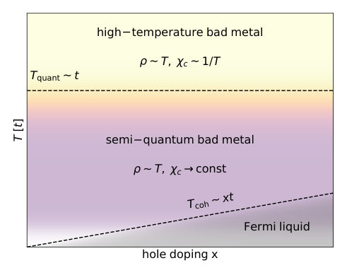
<figcaption class="paper-figure-caption"><b>Fig 1.</b> Figure 1. Schematic transport regimes of the doped infinite-U Hubbard model. The semi-quantum</figcaption>
</figure>
<figure class="paper-figure-card">
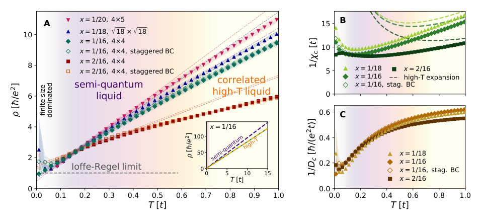
<figcaption class="paper-figure-caption"><b>Fig 2.</b> Figure 2. Bad-metallic transport regimes. (A) Twist-averaged dc resistivity for x = 1/20, 1/18, 1/16,</figcaption>
</figure>
<figure class="paper-figure-card">
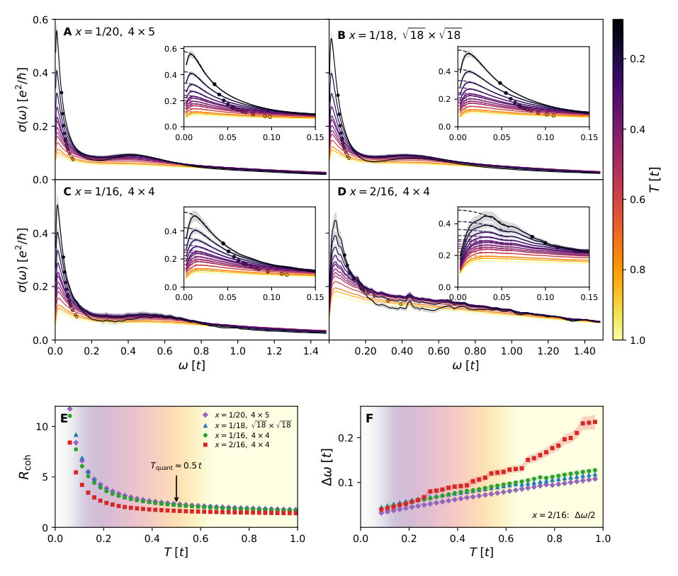
<figcaption class="paper-figure-caption"><b>Fig 3.</b> Figure 3. Optical conductivity in the semi-quantum regime. (A–D) optical conductivity σ(ω, T) for</figcaption>
</figure>
<figure class="paper-figure-card">
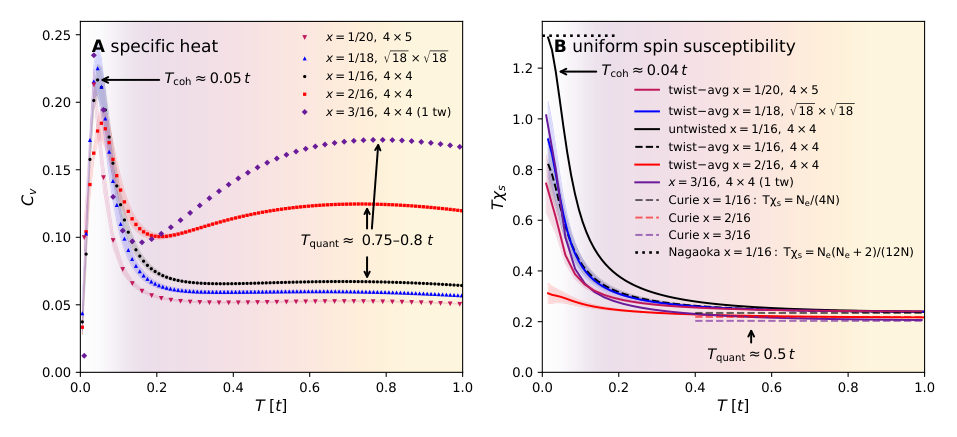
<figcaption class="paper-figure-caption"><b>Fig 4.</b> Figure 4. Thermodynamics across the semi-quantum crossover. (A) Specific heat per site for</figcaption>
</figure>
<figure class="paper-figure-card">
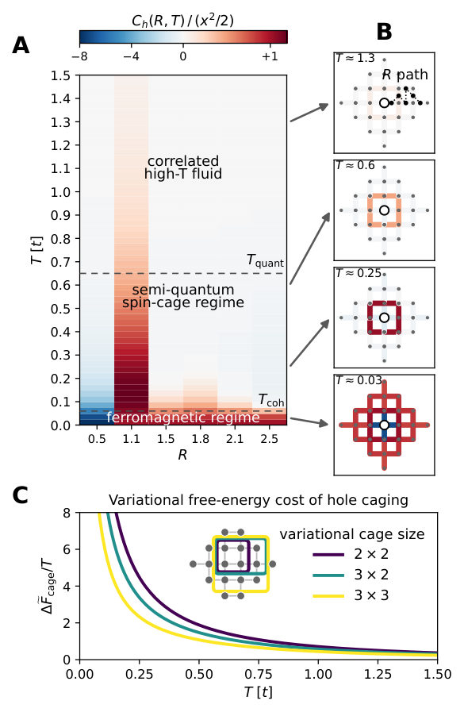
<figcaption class="paper-figure-caption"><b>Fig 5.</b> Figure 5. Formation and variational cost of a spin cage. A, Connected hole–spin-bond correlator</figcaption>
</figure>
</div>

<p><strong>Summary.</strong> This theoretical study examines 'bad metallicity' in the Hubbard model, proposing that the unusual temperature-linear resistivity arises from local quantum dynamics rather than simple thermal effects. The key finding is the emergence of a 'semi-quantum regime' characterized by the formation of spin cages around doped holes, which dictates the incoherent charge transport properties.</p>
<p><strong>Why it may be interesting.</strong> The concept of a 'semi-quantum regime' where thermodynamics and transport decouple, governed by local quantum structures (spin cages), provides an analogy to exotic quantum states in condensed matter, which is relevant for understanding non-equilibrium dynamics in strongly correlated systems.</p>
<details>
<summary>Detailed structure</summary>
<p><strong>Main problem.</strong> The paper investigates the origin of 'bad metallicity'—a state characterized by temperature-linear resistivity exceeding the Ioffe–Regel limit—to determine if it is a generic feature of strong local correlations.</p>
<p><strong>Main result.</strong> The bad metal behavior in the Hubbard model is linked to the formation of quasi-local ferromagnetic 'spin cages' around doped holes, which govern incoherent charge quantum dynamics in an intermediate 'semi-quantum regime'.</p>
<p><strong>Method.</strong> The study employs exact diagonalization on finite clusters and utilizes theoretical tools like the Nernst–Einstein decomposition and high-temperature expansions to analyze transport and thermodynamic properties.</p>
<p><strong>Model / system.</strong> The system is the infinite-$U$ Hubbard model studied on a two-dimensional square lattice. The Hamiltonian incorporates the constraint of no double occupancy, allowing the investigation of strongly correlated electron physics.</p>
<p><strong>Key observables.</strong> dc resistivity ($
ho$), compressibility ($\chi_c$), charge diffusivity ($D_c$), and the connected hole–spin-bond correlator ($C_h$).</p>
<p><strong>Important parameters / regimes.</strong> Three distinct temperature regimes are identified: high-T bad metal, the intermediate 'semi-quantum regime', and the low-T Fermi liquid regime. Key scales include $T_{	ext{quant}}$ and $T_{	ext{coh}}$.</p>
<p><strong>Assumptions / limitations.</strong> The analysis assumes that the low-doping ground state approaches a Nagaoka ferromagnetically ordered state at low temperatures.</p>
<p><strong>Figures summary.</strong> Figures illustrate the characteristic temperature dependencies of $
ho$ and $\chi_c$ across the three regimes, showing the shift in the source of temperature dependence from thermodynamics to dynamics in the semi-quantum regime. Other figures detail the evolution of spin correlations and the caging free-energy cost.</p>
<p><strong>Paper structure.</strong> The paper systematically analyzes the temperature dependence of transport properties, first establishing the bad metal behavior, then identifying the crossover scales ($T_{	ext{quant}}$), and finally linking the dynamics in the intermediate regime to the formation of local spin structures (spin cages).</p>
</details>
<details>
<summary>Abstract</summary>
<p>Bad metals exhibit approximately $T$-linear dc resistivity beyond the Ioffe--Regel limit. That this behavior occurs in systems with radically different ground states suggests it is a generic manifestation of strong local correlations. We test this hypothesis in the infinite-$U$ Hubbard model with small hole densities using exact diagonalization to compute thermodynamic and transport properties of finite clusters. Upon cooling, we find an intermediate temperature range, an electronic analogue of the <code>semi-quantum regime'' of liquid helium, in which quantum effects produce a roughly $T$-independent compressibility, yet the resistivity is $T$-linear and exceeds the Ioffe--Regel limit. Entry into this regime is accompanied by the formation of quasi-local ferromagnetic</code>spin cages'' around doped holes, regions that facilitate local quantum motion embedded in a fluctuating spin background, analogous to the transient crystalline cages thought to control incoherent transport in semi-quantum liquid helium. Remarkably, despite the simplicity of the model, the bad metal behavior found here resembles that seen in various material platforms.</p>
</details>
<p><sub><a href="#top">↑ back to top</a></sub></p>

<p><a id="paper-2609.19255"></a></p>
<h3 id="deterministic-hypergraph-syk-melonic-dominance-and-maximal-chaos-without-disorder-averaging"><a href="http://arxiv.org/abs/2609.19255v1">Deterministic Hypergraph SYK: Melonic Dominance and Maximal Chaos Without Disorder Averaging</a></h3>
<p><strong>Authors:</strong> Shiroman Prakash<br>
<strong>Type:</strong> theory · <strong>Category:</strong> strongly correlated electrons · <strong>PDF:</strong> <a href="https://arxiv.org/pdf/2609.19255v1">https://arxiv.org/pdf/2609.19255v1</a><br>
<strong>Analysis basis:</strong> full PDF text, analyzed in chunks
<strong>Topic relevance:</strong> <code>Keldysh / 2PI / non-Gaussian methods</code> <strong>3/5</strong> · <code>analog quantum simulation</code> <strong>2/5</strong> · <code>methods for driven-dissipative</code> <strong>1/5</strong></p>
<div class="figure-strip-hint">↔ Scroll figures horizontally</div>
<div class="paper-figures-scroll">
<figure class="paper-figure-card">
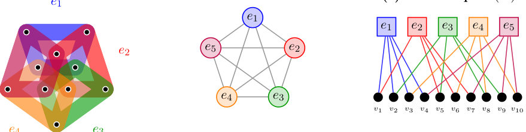
<figcaption class="paper-figure-caption"><b>Fig 1.</b> Figure 1: Three representations of a 4-uniform, 2-regular hypergraph. We present an example with |E| = 5, N = 10. (a) The physical hypergraph, where each interaction ei contains exactly q = 4 fermions. Because d = 2, every black dot lies in exactly two colored regions. (b) The line graph is fully connected (K5) because every pair of hyperedges shares exactly one fermion. (c) The bipartite Levi graph makes the parameters obvious: uniformity implies that every top node (interaction) has degree q = 4, while regularity implies that every bottom node (fermion) has degree d = 2. (Note B(H) has many cycles, so this example may not be representative of a hypergraph satisfying Axiom 2.)</figcaption>
</figure>
<figure class="paper-figure-card">
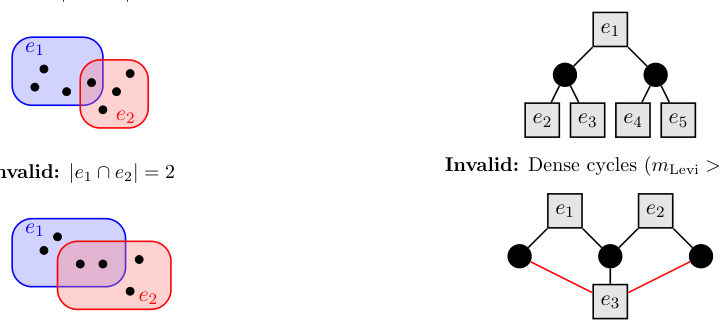
<figcaption class="paper-figure-caption"><b>Fig 2.</b> Figure 2: The two geometric axioms that must be satisfied by the hypergraph. (a) The 1-overlap condition forbids hyperedges from sharing multiple fermions. (b) The Levi sparsity axiom restricts the bipartite Levi graph (hyperedges as squares, fermions as circles). A valid model is locally tree-like. The red edges illustrate extra connections beyond the spanning tree (black), yielding a local cycle rank (mLevi) of 2. We require the density of these local cycles to remain bounded by O(1) in the limit d ≫1.</figcaption>
</figure>
<figure class="paper-figure-card">
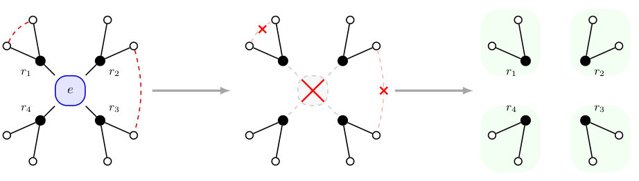
<figcaption class="paper-figure-caption"><b>Fig 3.</b> Figure 3: Schematic cavity geometry after deleting a distinguished hyperedge, shown for q = 4. (a) A radius-R neighborhood around e in the Levi graph contains four rooted branches together with O(1) short cycle-closing reconnections (dashed red). (b) Deleting e and pruning these defects produces a spanning forest with disjoint rooted neighborhoods. (c) At fixed perturbative order, couplings between distinct rooted trees require at least two additional hyperedge insertions and are therefore O(d−1).</figcaption>
</figure>
<figure class="paper-figure-card">
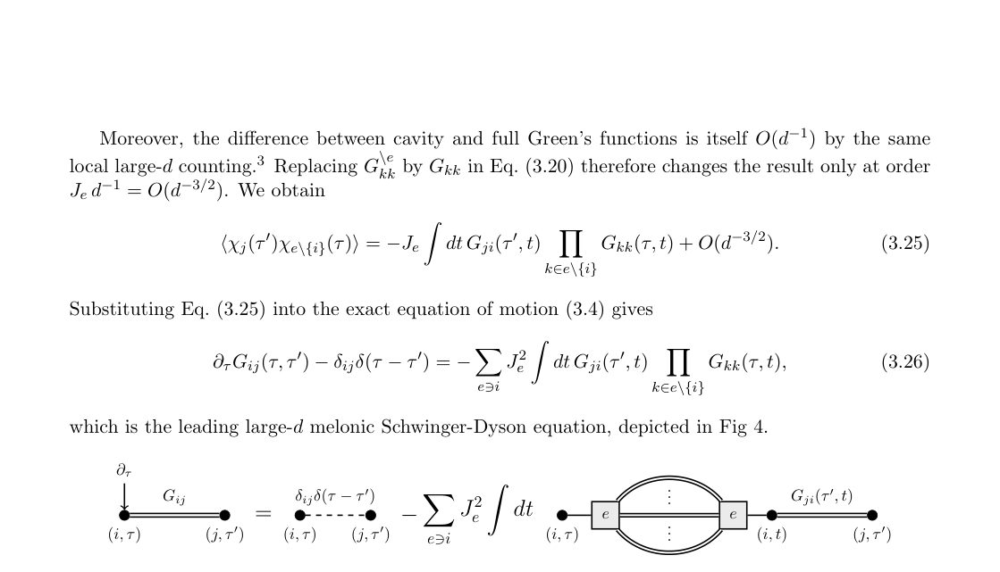
<figcaption class="paper-figure-caption"><b>Fig 4.</b> Figure 4: Leading large-d melonic Schwinger-Dyson equation, shown schematically. The left-hand side contains the kinetic and contact terms for Gij(τ, τ ′). The right-hand side is the melonic self-energy contribution: a sum over hyperedges e ∋i and intermediate time t, with q−1 site-diagonal propagators dressing the full line Gji(τ ′, t).</figcaption>
</figure>
<figure class="paper-figure-card">
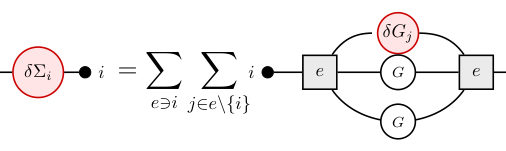
<figcaption class="paper-figure-caption"><b>Fig 5.</b> Figure 5: Diagrammatic origin of the site-space kernel K, shown schematically for q = 4. (a) The diagonal propagator is decomposed as Gi = G+δGi. (b) The leading large-d self-energy Σi is obtained by summing over hyperedges e ∋i. (c) Linearizing around the uniform saddle replaces one internal leg by δGj, and summing over e ∋i and j ∈e \ {i} yields δΣi ∝P j KijδGj.</figcaption>
</figure>
</div>

<p><strong>Summary.</strong> This paper constructs a deterministic hypergraph realization of the SYK model, aiming to show that its characteristic chaotic and melonic physics does not require random disorder averaging. By analyzing the two-point function and OTOCs using advanced techniques like the cavity formalism, the authors demonstrate that the model successfully reproduces the key theoretical predictions of SYK in a structured, non-random setting.</p>
<p><strong>Why it may be interesting.</strong> It provides a concrete, geometrically constrained, and disorder-free platform to study universal quantum chaotic dynamics (like those seen in SYK), which is highly relevant for understanding strongly correlated quantum matter.</p>
<details>
<summary>Detailed structure</summary>
<p><strong>Main problem.</strong> To determine if the essential melonic and chaotic features of the Sachdev-Ye-Kitaev (SYK) model can be realized in a sparse, deterministic setting without relying on disorder averaging.</p>
<p><strong>Main result.</strong> The deterministic hypergraph SYK model (hSYK) successfully recovers the standard SYK bilocal effective action and exhibits characteristic chaotic signatures like Wigner-Dyson statistics, providing a disorder-free realization.</p>
<p><strong>Method.</strong> The analysis uses Schwinger-Dyson equations, the cavity formalism, and spectral expansion techniques to evaluate correlation functions in the large-$d$ limit.</p>
<p><strong>Model / system.</strong> The model is a deterministic hypergraph SYK (hSYK) defined on a $q$-uniform, $d$-regular interaction hypergraph with $N$ Majorana fermions. The interactions are sparse, scaling as $O(dN)$ rather than exponentially.</p>
<p><strong>Key observables.</strong> Two-point function, connected four-point function, Out-of-Time-Order Correlators (OTOCs), and spectral statistics (Wigner-Dyson).</p>
<p><strong>Important parameters / regimes.</strong> Large-$d$ limit, fixed $q \ge 4$, and the structural constraints imposed by the hypergraph geometry.</p>
<p><strong>Assumptions / limitations.</strong> The model relies on structural axioms concerning the hypergraph, such as the 'one-overlap' condition ($|e_a \cap e_b| \le 1$) and spectral separation gaps.</p>
<p><strong>Figures summary.</strong> Figure 1 illustrates the physical hypergraph, its line graph, and the relationship between these structures.</p>
<p><strong>Paper structure.</strong> The paper develops the analysis by first establishing the two-point function via the Schwinger-Dyson equation and cavity formalism, then deriving the effective action, and finally confirming chaotic features using OTOCs and spectral statistics.</p>
</details>
<details>
<summary>Abstract</summary>
<p>We show that SYK-like melonic solvability and maximal chaos survive in a sparse deterministic model, without disorder averaging. Our deterministic hypergraph SYK model (hSYK) consists of $N$ Majorana fermions on a $q$-uniform, $d$-regular interaction hypergraph with only $O(dN)$ interaction terms and uniform positive couplings. Under explicit geometric and spectral expansion conditions, its two-point function satisfies the standard melonic Schwinger-Dyson equation up to $O(d^{-1})$ corrections, while the leading bilocal effective action coincides with that of ordinary SYK at the dominant large-$d$ saddle. Its connected four-point function factorizes into a temporal SYK ladder kernel and a line-graph random walk. A finite line-graph spectral gap controls the visibility of the maximally chaotic uniform mode in generic localized OTOCs and, by gapping non-uniform spatial modes in the bilocal spectrum, excludes additional light fluctuation modes beyond the Schwarzian. Exact diagonalization further shows melonic two-point scaling, single-instance Wigner-Dyson statistics, and the predicted graph-controlled spatial decay of OTOCs. The model therefore offers a disorder-free realization of the essential melonic and chaotic features of SYK, in a form more amenable to quantum simulation.</p>
</details>
<p><sub><a href="#top">↑ back to top</a></sub></p>

<p><a id="paper-2609.19282"></a></p>
<h3 id="non-abelian-anyon-condensation-a-path-integral-monte-carlo-approach"><a href="http://arxiv.org/abs/2609.19282v1">Non-Abelian Anyon Condensation: a Path-Integral Monte Carlo Approach</a></h3>
<p><strong>Authors:</strong> Rafael Flores-Calderón, Frank Pollmann, Michael Knap<br>
<strong>Type:</strong> theory · <strong>Category:</strong> statistical mechanics · <strong>PDF:</strong> <a href="https://arxiv.org/pdf/2609.19282v1">https://arxiv.org/pdf/2609.19282v1</a><br>
<strong>Analysis basis:</strong> full PDF text, analyzed in chunks
<strong>Topic relevance:</strong> <code>methods for driven-dissipative</code> <strong>3/5</strong> · <code>analog quantum simulation</code> <strong>2/5</strong> · <code>Keldysh / 2PI / non-Gaussian methods</code> <strong>1/5</strong></p>
<div class="figure-strip-hint">↔ Scroll figures horizontally</div>
<div class="paper-figures-scroll">
<figure class="paper-figure-card">
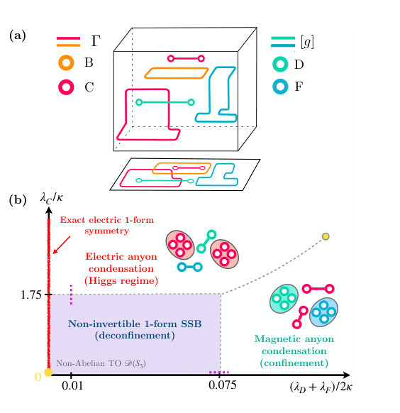
<figcaption class="paper-figure-caption"><b>Fig 1.</b> FIG. 1. From anyon condensation to a classical lattice gauge– Higgs theory. (a) The lattice path integral lifts the two-dimensional quantum-double model in a field (bottom) to a three-dimensional classical ensemble of electric Γ ∈Rep(G) and magnetic [g] ∈ Class(G) strings. (b) Phase diagram of D(S3), where short open electric strings proliferate the C anyon (Γ = E), while magnetic strings proliferate the D and F anyons (fluxes [s] and [r], respec- tively). Here κ is the plaquette energy scale. Along the vertical axis (red), the Hamiltonian preserves an exact non-invertible electric 1- form symmetry. Gray dashed lines denote first-order transitions, and purple dashed lines mark the cuts we...</figcaption>
</figure>
<figure class="paper-figure-card">
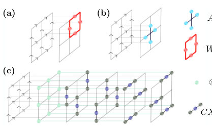
<figcaption class="paper-figure-caption"><b>Fig 2.</b> FIG. 2. Local operators and the matterization circuit. (a) Qu- dits are placed on the links of the oriented lattice. The elementary Wilson loop W Γ(∂p) measures the plaquette flux in irrep Γ. We define Oℓs = −(+) when ℓpoints away from (toward) a vertex s, and Oℓp = −(+) indicates that the conjugate ¯Γ (Γ) representation is used if the orientation of the link is opposite (equal) to the plaquette path ordering P direction. (b) The star operator Ag(s) acts by group multiplication on the four links adjacent to s. (c) The matterization isometry appends a vertex G-qudit (cyan dot) and uses controlled left and right multiplications, denoted CXs,ℓ −CXs′,ℓ + , to rewrite ev- ery link relative to...</figcaption>
</figure>
<figure class="paper-figure-card">
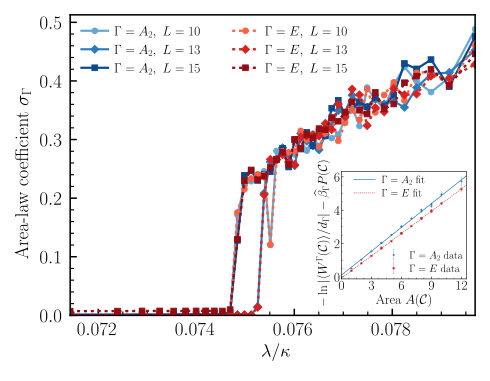
<figcaption class="paper-figure-caption"><b>Fig 3.</b> FIG. 3. Onset of the Wilson-loop area law at the confinement transition. Effective area coefficient extracted from contractible A2 (solid) and E (dotted) Wilson loops for β = 50, and ∆τ = 0.3. The fit includes both area and perimeter law contributions (inset λ/κ = 0.079). The good overlap of the two irreps is consistent with the leading order representation-independent strong-field result. The sharp onset of the area coefficient marks confinement. Here, we set λD = λF = λ and λC = 0.</figcaption>
</figure>
<figure class="paper-figure-card">
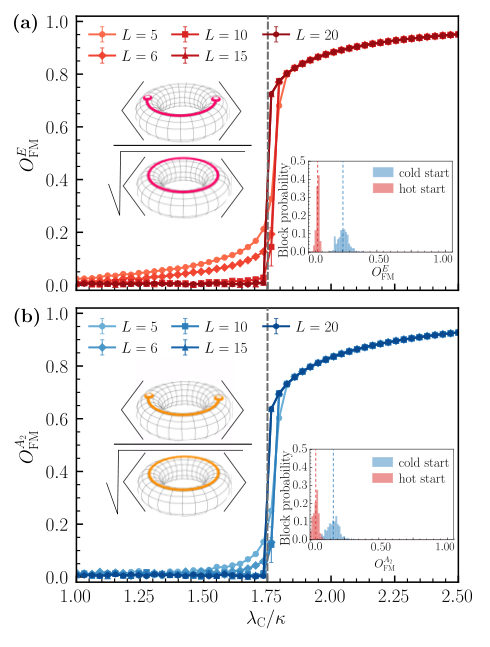
<figcaption class="paper-figure-caption"><b>Fig 4.</b> FIG. 4. Irrep-resolved electric-anyon condensation.Fredenhagen– Marcu order parameters (a) OE FM and (b) OA2 FM versus λC/κ for the S3 gauge–Higgs theory at J/κ = 10, λ/κ = 0.01, and λB = 0. We use β = 50 and ∆τ = 0.1. A simultaneous transition is ob- served at λC/κ ≃1.75 in both FM order parameters (gray dashed line). Left insets show a schematic of the FM string order parameter associated with electric anyons C (pink) and B (orange). Right in- sets show long-lived low- and high-FM order parameter branches at λC/κ = 1.75 obtained from hot and cold starts, respectively, provid- ing evidence for metastability consistent with a first-order transition. We present additional histograms in SM...</figcaption>
</figure>
<figure class="paper-figure-card">
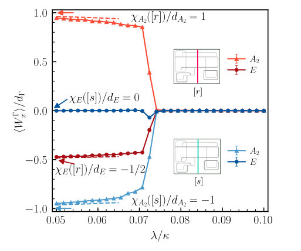
<figcaption class="paper-figure-caption"><b>Fig 5.</b> FIG. 5. Higher-form symmetry breaking and confinement. Non- contractible x-cycle Γ = {A2, E} Wilson loops for S3 at L = 10, β = 60 and ∆τ = 0.3 for different initial random Monte Carlo runs, blue and red. In the deconfined phase the [s] (blue) and [r] (red) flux sectors retain distinct expectation values approaching their respective characters as indicated by the arrows; the perturbative re- sult in λ/κ is shown as dashed lines. The values of the Wilson loops for each branch are consistent with fixed magnetic 1-form symmetry sectors indicating a broken emergent magnetic 1-form symmetry de- tected via electric 1-form symmetry operators. Across confinement all branches collapse to zero and...</figcaption>
</figure>
</div>

<p><strong>Summary.</strong> This work develops a novel, sign-free path-integral Monte Carlo approach to study transitions out of non-Abelian topological order in Kitaev quantum double models. By mapping the system to a gauge-Higgs theory, the authors successfully diagnose non-Abelian anyon condensation and confinement transitions. The results provide a unified numerical tool for understanding complex topological phase transitions in condensed matter systems.</p>
<p><strong>Why it may be interesting.</strong> The rigorous development of a sign-free path-integral method to study topological phase transitions in lattice gauge theories is highly relevant to understanding emergent phenomena in strongly correlated quantum matter systems.</p>
<details>
<summary>Detailed structure</summary>
<p><strong>Main problem.</strong> The paper addresses the difficulty of describing transitions out of non-Abelian topological order using standard numerical methods at large scales.</p>
<p><strong>Main result.</strong> The authors provide a unified numerical framework demonstrating non-Abelian anyon condensation and confinement transitions in Kitaev quantum doubles for $G=S_3$. Specifically, electric anyon proliferation drives a first-order condensation transition.</p>
<p><strong>Method.</strong> The methodology involves developing a sign-free path-integral framework by mapping the link-only model onto a $G$ gauge–Higgs theory via an exact matterization isometry. Quantum Monte Carlo simulations are used to analyze the resulting lattice gauge-Higgs model.</p>
<p><strong>Model / system.</strong> The system is based on Kitaev quantum doubles $\mathcal D(G)$ defined on a lattice, which are perturbed by single-link operators to probe anyon condensation. This model is mathematically transformed into a $(2+1)$D $G$ gauge–Higgs theory.</p>
<p><strong>Key observables.</strong> Generalized Fredenhagen–Marcu (FM) order parameters (for condensation) and Wilson loops (for confinement).</p>
<p><strong>Important parameters / regimes.</strong> The group $G$ (specifically $S_3$), and coupling ratios like $\lambda_a/\kappa$ controlling the type of anyon proliferation.</p>
<p><strong>Assumptions / limitations.</strong> The analysis relies on the existence of a unitary transformation and an isometry to map the quantum double model to a classical gauge-Higgs theory, and the use of the Trotter approximation in the path integral.</p>
<p><strong>Figures summary.</strong> Figures illustrate the path integral lifting to a gauge-Higgs theory, the action of local operators via the matterization circuit, and the diagnostic plots showing the onset of the Wilson-loop area law and the finite jump in FM order parameters.</p>
<p><strong>Paper structure.</strong> The paper proceeds by first establishing the physical problem and the need for a tractable numerical framework. It then details the mathematical machinery: the matterization isometry and the transformation of the Hamiltonian to the gauge-Higgs form. Finally, it applies this framework to analyze specific transitions (condensation and confinement) using Monte Carlo simulations and order parameters.</p>
</details>
<details>
<summary>Abstract</summary>
<p>Transitions out of non-Abelian topological order are difficult to describe in microscopic quantum models with numerical methods that remain tractable at large scales. We develop a sign-free path-integral framework for Kitaev quantum doubles $\mathcal D(G)$ by organizing single-link perturbations in terms of non-invertible electric and magnetic 1-form symmetries that proliferate distinct anyon species. For any finite group $G$, an exact $\textit{matterization}$ isometry introduces vertex degrees of freedom and maps the link-only model onto a $G$ gauge--Higgs theory. Furthermore, the 1-form symmetries of the fixed point allow us to define generalized Fredenhagen--Marcu order parameters that become finite when the corresponding anyons condense. For $G = S_3$, quantum Monte Carlo simulations show that proliferating a non-Abelian electric anyon drives a first-order transition in which all nontrivial electric anyons condense. In the purely magnetic limit, the model reduces to a $(2+1)$D pure $G$ gauge theory; for $G=S_3$, it exhibits a first-order confinement transition, diagnosed by the onset of a Wilson-loop area law and the restoration of an emergent magnetic 1-form symmetry. These results provide a unified numerical framework for non-Abelian anyon condensation, confinement, and generalized symmetry breaking.</p>
</details>
<p><sub><a href="#top">↑ back to top</a></sub></p>

<p><a id="paper-2609.19784"></a></p>
<h3 id="transduction-enabled-superconducting-quantum-repeater-toward-deterministic-entanglement-distribution-with-high-fidelity-gates"><a href="http://arxiv.org/abs/2609.19784v1">Transduction-Enabled Superconducting Quantum Repeater: Toward Deterministic Entanglement Distribution with High-Fidelity Gates</a></h3>
<p><strong>Authors:</strong> Francesco Fiorini, Jing Wu, Andrew Cameron, Changqing Wang, Doga M. Kurkcuoglu, Rosario G. Garroppo, Michele Pagano, Silvia Zorzetti<br>
<strong>Type:</strong> theory · <strong>Category:</strong> quantum information and computing · <strong>PDF:</strong> <a href="https://arxiv.org/pdf/2609.19784v1">https://arxiv.org/pdf/2609.19784v1</a><br>
<strong>Analysis basis:</strong> full PDF text, analyzed in chunks
<strong>Topic relevance:</strong> <code>QC/QI experiment</code> <strong>3/5</strong> · <code>quantum optics experiment</code> <strong>2/5</strong> · <code>quantum measurements</code> <strong>1/5</strong></p>
<div class="figure-strip-hint">↔ Scroll figures horizontally</div>
<div class="paper-figures-scroll">
<figure class="paper-figure-card">
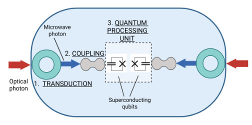
<figcaption class="paper-figure-caption"><b>Fig 1.</b> FIG. 1. Illustration of TESQR node architecture performing joint measurement on two optical photons via transduction, coupling, and superconducting QPU.</figcaption>
</figure>
<figure class="paper-figure-card">
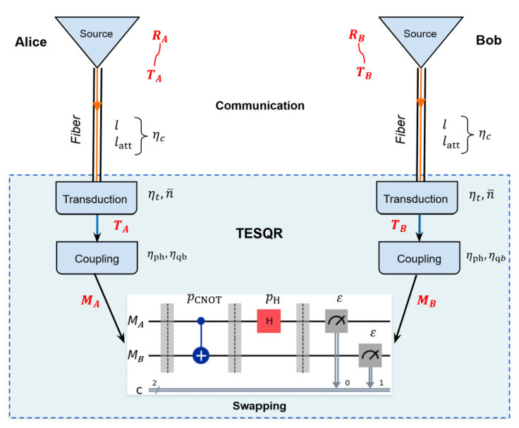
<figcaption class="paper-figure-caption"><b>Fig 2.</b> FIG. 2. Schematic of the network architecture. The setup features Alice and Bob at the endpoints, each producing an entangled pair: a transmitted photonic qubit (TA or TB) in single-rail Fock-state encoding and a remote superconducting qubit (RA or RB). Photonic qubits travel through optical fibers of length l with transmissivity ηc = e−l/latt (latt = 22 km, equivalent to 0.2 dB/km at 1550 nm). At the TESQR node, optical-to-microwave conversion occurs via electro-optic transduction with efficiency ηt and thermal noise photon number ¯n. Microwave photons couple to superconducting qubits MA and MB with photon availability ηph and transition efficiency ηqb. Gate-based entanglement swapping...</figcaption>
</figure>
<figure class="paper-figure-card">
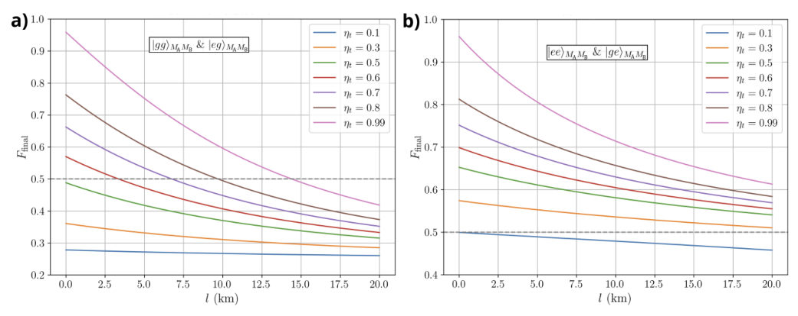
<figcaption class="paper-figure-caption"><b>Fig 3.</b> FIG. 3. Final output fidelity Ffinal as a function of fiber length l (km), for various transduction efficiency values and for MAMB measurement outcomes: a) |gg⟩MAMB and |eg⟩MAMB, b) |ee⟩MAMB and |ge⟩MAMB. The other network parameters are set according to Table IV.</figcaption>
</figure>
<figure class="paper-figure-card">
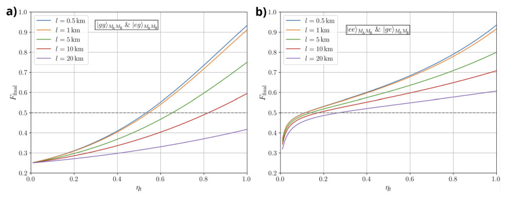
<figcaption class="paper-figure-caption"><b>Fig 4.</b> FIG. 4. Final output fidelity Ffinal as a function of transduction efficiency ηt, for various fiber length values and for MAMB measurement outcomes: a) |gg⟩MAMB and |eg⟩MAMB, b) |ee⟩MAMB and |ge⟩MAMB. The other network parameters are set according to Table IV.</figcaption>
</figure>
<figure class="paper-figure-card">
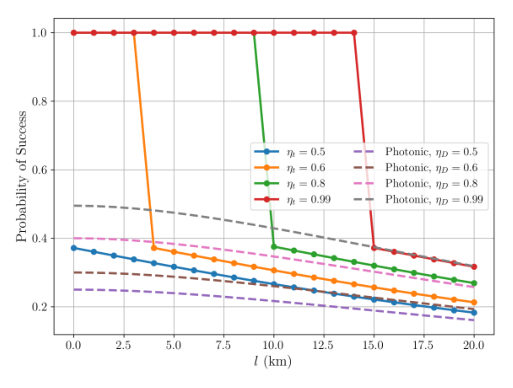
<figcaption class="paper-figure-caption"><b>Fig 5.</b> FIG. 6. Swapping success probability versus fiber length l (km) for the hybrid TESQR scheme (solid curves) and the photonic counterpart (dashed curves), plotted for different transduction efficiencies ηt and photodetection efficiencies ηD.</figcaption>
</figure>
</div>

<p><strong>Summary.</strong> This paper introduces the Transduction-Enabled Superconducting Quantum Repeater (TESQR) to overcome the probabilistic limitations of current quantum repeaters. By integrating superconducting circuits to perform deterministic entanglement swapping, the scheme significantly boosts entanglement distribution rates and maintains high fidelity over practical distances. It represents a crucial step toward building scalable quantum communication networks.</p>
<p><strong>Why it may be interesting.</strong> This work directly addresses the engineering challenge of scaling quantum networks by proposing a concrete, high-fidelity physical implementation that bridges the gap between long-haul photonics and solid-state quantum computation.</p>
<details>
<summary>Detailed structure</summary>
<p><strong>Main problem.</strong> Long-distance entanglement distribution is limited by photon loss and the probabilistic nature of Bell State Measurements (BSMs) in traditional quantum repeaters.</p>
<p><strong>Main result.</strong> The proposed Transduction-Enabled Superconducting Quantum Repeater (TESQR) improves entanglement distribution rates by up to 159% and achieves end-to-end fidelities exceeding 0.8 over 20 km after purification.</p>
<p><strong>Method.</strong> The authors propose a hybrid architecture combining photonic qubits with superconducting circuits to enable deterministic entanglement processing, avoiding probabilistic BSMs.</p>
<p><strong>Model / system.</strong> The system integrates three components at the repeater node: quantum transduction (optical to microwave), coupling to a superconducting QPU, and local entanglement swapping performed via microwave gates. The analysis uses quantum channel formalism and density matrix evolution.</p>
<p><strong>Key observables.</strong> Output-state fidelities, success probabilities of entanglement distribution, and end-to-end fidelities.</p>
<p><strong>Important parameters / regimes.</strong> Fiber length (up to 20 km), transduction efficiency ($\eta_t$), coupling efficiencies ($\eta_{ph}, \eta_{qb}$), and gate error rates.</p>
<p><strong>Assumptions / limitations.</strong> Ideal memory performance is assumed, and the analysis initially focuses on quantum-processing performance metrics rather than resource costs.</p>
<p><strong>Figures summary.</strong> Figure 1 illustrates the TESQR node architecture (Transduction $
ightarrow$ Coupling $
ightarrow$ Superconducting QPU). Other figures analyze the degradation of fidelity due to asymmetries in transduction efficiency, fiber length, and thermal noise.</p>
<p><strong>Paper structure.</strong> The paper first establishes the limitations of current quantum repeaters, then details the TESQR architecture, models the state evolution through sequential steps (Source $
ightarrow$ Transmission $
ightarrow$ Transduction $
ightarrow$ Coupling $
ightarrow$ Swapping), and finally analyzes the performance under various noise and asymmetry conditions.</p>
</details>
<details>
<summary>Abstract</summary>
<p>Long-distance entanglement distribution is hindered by photon loss in optical fibers and the nocloning theorem. Optical quantum repeater (QR) protocols rely on Bell state measurements (BSMs), they are intrinsically limited to probabilistic photon operations and fail 50% of the time. We propose a hybrid approach to building quantum repeaters that combines the high transmission speed of photonic qubits in optical fiber with the high-fidelity quantum processing capabilities enabled by superconducting circuits. The transduction-enabled superconducting QR (TESQR) architecture eliminates the need for probabilistic BSMs and allows deterministic processing operations. The TESQR framework always yields a final state at the remote nodes rather than aborting on photon loss, manifesting deterministic entanglement distribution within certain parameter regimes. We evaluate the performance by assessing output-state fidelities and success probabilities of entanglement distribution using realistic noise models. Additionally, we integrate an entanglement purification scheme and evaluate the performance through numerical simulations in QuTiP environment. Our results show that, for entanglement swapping, the proposed scheme improves the entanglement distribution rate by an average of 63% and by up to 159% compared with photonic-only architectures. Moreover, after purification, the end-to-end fidelities exceed 0.8 over distances up to 20 km.</p>
</details>
<p><sub><a href="#top">↑ back to top</a></sub></p>

<p><a id="paper-2609.20391"></a></p>
<h3 id="universal-1f-noise-in-the-power-spectra-of-energy-time-series-in-solvated-dna-dynamics"><a href="http://arxiv.org/abs/2609.20391v1">Universal 1/f Noise in the Power Spectra of Energy Time-series in Solvated DNA Dynamics</a></h3>
<p><strong>Authors:</strong> Harsh Sahu, Deepika Sardana, Pramod Kumar, Ajay Kumar Chand, Sobhan Sen, Sanjay Puri<br>
<strong>Type:</strong> both · <strong>Category:</strong> statistical mechanics · <strong>PDF:</strong> <a href="https://arxiv.org/pdf/2609.20391v1">https://arxiv.org/pdf/2609.20391v1</a><br>
<strong>Analysis basis:</strong> full PDF text, analyzed in chunks
<strong>Topic relevance:</strong> <code>non-equilibrium universality</code> <strong>3/5</strong> · <code>correlated / nonlocal dissipation</code> <strong>1/5</strong> · <code>driven-dissipative phase transition</code> <strong>1/5</strong> · <code>scars &amp; prethermalization</code> <strong>1/5</strong></p>
<div class="figure-strip-hint">↔ Scroll figures horizontally</div>
<div class="paper-figures-scroll">
<figure class="paper-figure-card">
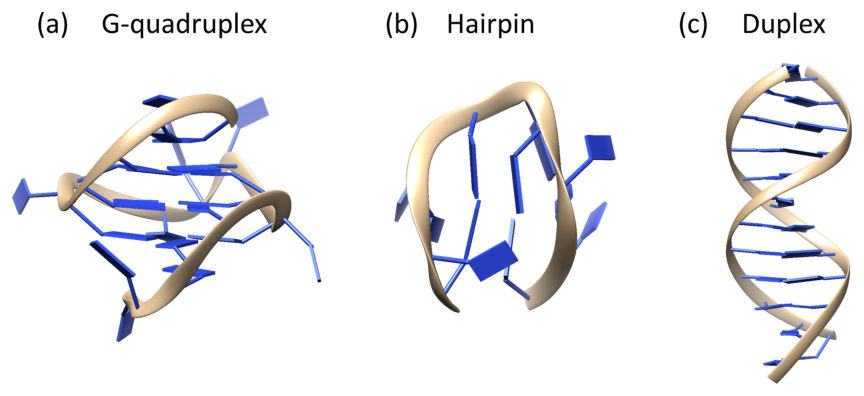
<figcaption class="paper-figure-caption"><b>Fig 1.</b> FIG. 1. Schematic illustration depicting experimentally determined structures of DNA, (a) G-</figcaption>
</figure>
<figure class="paper-figure-card">
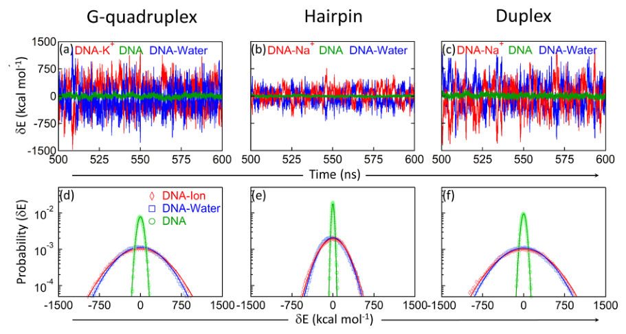
<figcaption class="paper-figure-caption"><b>Fig 2.</b> FIG. 2. (a)-(c) Energy fluctuations of DNA self (δE1, green), DNA-water (δE2, blue), DNA-ion</figcaption>
</figure>
<figure class="paper-figure-card">
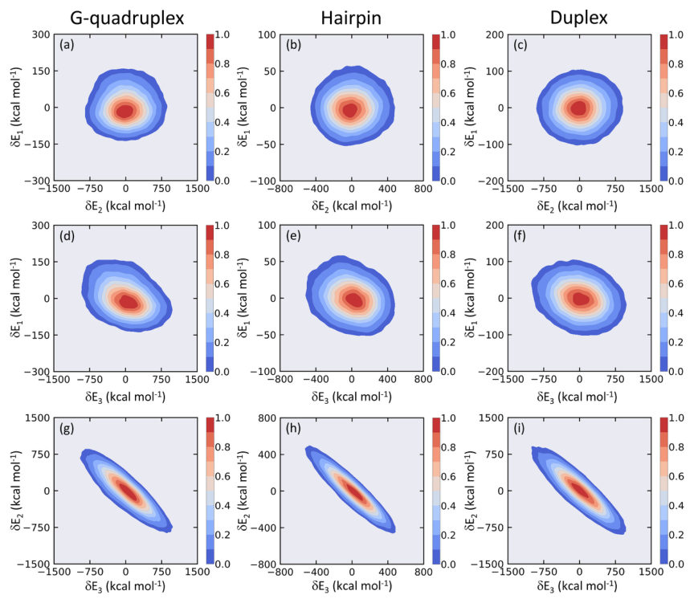
<figcaption class="paper-figure-caption"><b>Fig 3.</b> FIG. 3. Contour representation of bivariate distributions of δE1, δE2, δE3 for (a), (d), (g) G4</figcaption>
</figure>
<figure class="paper-figure-card">
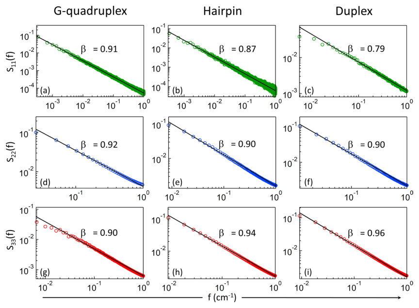
<figcaption class="paper-figure-caption"><b>Fig 4.</b> FIG. 4. Log-log plot of power spectra, Sii(f) vs. f, of energy time-series for δE1, δE2, δE3. We</figcaption>
</figure>
<figure class="paper-figure-card">
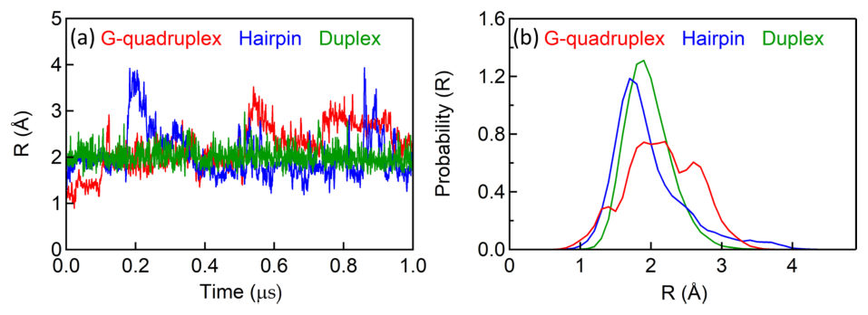
<figcaption class="paper-figure-caption"><b>Fig 5.</b> FIG. 5. (a) Time evolution of the root-mean-square deviation R(t) for the DNA backbone of G4</figcaption>
</figure>
</div>

<p><strong>Summary.</strong> This work uses molecular dynamics simulations to study energy fluctuations in solvated DNA across three topologies. The key finding is that the energy time-series exhibit universal 1/f noise, with the degree of low-frequency spectral power directly correlating with the structural flexibility of the DNA conformation. This highlights how topological constraints govern the stochastic dynamics of biomolecules in solution.</p>
<p><strong>Why it may be interesting.</strong> The finding of universal $1/f$ noise across different structural states, coupled with the explicit link between structural flexibility and the low-frequency spectral components, provides insights into non-equilibrium dynamics relevant to biological energy dissipation.</p>
<details>
<summary>Detailed structure</summary>
<p><strong>Main problem.</strong> The study investigates the universal nature of 1/f noise in the power spectra of energy time-series fluctuations within solvated DNA dynamics, and how DNA topology modulates its coupling with the surrounding environment.</p>
<p><strong>Main result.</strong> All analyzed energy time-series exhibit universal 1/f noise with an exponent $\beta \simeq 0.90$, but flexible structures (G-quadruplex, Hairpin) show pronounced low-frequency modes compared to the rigid Duplex.</p>
<p><strong>Method.</strong> The research employs comprehensive atomistic Molecular Dynamics (MD) simulations to calculate energy fluctuations ($\delta E$) and subsequently analyze their power spectral density ($S(f)$) via the Discrete Fourier Transform (DFT).</p>
<p><strong>Model / system.</strong> The physical system is solvated DNA modeled in three distinct conformations: G-quadruplex, Hairpin, and Duplex. The environment includes explicit water molecules and mobile counter-ions, simulated using established force fields.</p>
<p><strong>Key observables.</strong> Energy fluctuations ($\delta E_{DNA\text{-}DNA}$, $\delta E_{DNA\text{-}water}$, $\delta E_{DNA\text{-}ion}$), Pearson correlation coefficients ($\rho_{ij}$), and the power spectral density $S_{ii}(f)$ exhibiting $1/f$ noise.</p>
<p><strong>Important parameters / regimes.</strong> The universal decay exponent $\beta \simeq 0.90$, and the structural rigidity differences between the three DNA forms.</p>
<p><strong>Assumptions / limitations.</strong> The analysis assumes the system is in a stationary regime for power spectrum calculation, and that the observed noise characteristics reflect the underlying physical coupling mechanisms.</p>
<p><strong>Figures summary.</strong> Figures show typical time-series and probability distributions of energy fluctuations, contour plots of bivariate distributions, and log-log plots of power spectra $S_{ii}(f)$ confirming the power-law scaling.</p>
<p><strong>Paper structure.</strong> The paper systematically analyzes energy correlations ($\rho_{ij}$) between DNA self, water, and ion energies, demonstrating strong anti-correlation between water and ion energies. It then analyzes the power spectra $S_{ii}(f)$ across the three DNA structures, contrasting the low-frequency behavior dictated by structural flexibility.</p>
</details>
<details>
<summary>Abstract</summary>
<p>We investigate energy fluctuations of solvated DNA in three conformations: G-quadruplex, Hairpin, and Duplex. Our comprehensive molecular dynamics (MD) simulations demonstrate that the time-series of interaction energies for DNA self, DNA-water and DNA-ion show 1/f noise with a universal decay exponent $β\simeq 0.90$. We show that DNA topology and structural rigidity modulate its dynamic coupling with the surrounding hydration shell and mobile counter-ions. This coupling critically shapes the 1/f noise profile: DNA self energies in flexible structures (G-quadruplex, Hairpin) display pronounced low-frequency modes absent in the rigid Duplex. These findings reveal how the interplay between DNA topology and environmental coupling governs different stochastic behavior in biologically relevant forms of DNA.</p>
</details>
<p><sub><a href="#top">↑ back to top</a></sub></p>

<p><a id="paper-2609.20743"></a></p>
<h3 id="scaling-and-condensation-of-dry-active-matter-around-circular-obstacles"><a href="http://arxiv.org/abs/2609.20743v1">Scaling and Condensation of Dry Active Matter Around Circular Obstacles</a></h3>
<p><strong>Authors:</strong> Felipe P. S. Júnior, F. Q. Potiguar, Jorge L. C. Domingos, W. P. Ferreira<br>
<strong>Type:</strong> theory · <strong>Category:</strong> statistical mechanics · <strong>PDF:</strong> <a href="https://arxiv.org/pdf/2609.20743v1">https://arxiv.org/pdf/2609.20743v1</a><br>
<strong>Analysis basis:</strong> full PDF text, analyzed in chunks
<strong>Topic relevance:</strong> <code>non-equilibrium universality</code> <strong>3/5</strong> · <code>Frenkel-Kontorova</code> <strong>1/5</strong> · <code>driven-dissipative phase transition</code> <strong>1/5</strong></p>
<div class="figure-strip-hint">↔ Scroll figures horizontally</div>
<div class="paper-figures-scroll">
<figure class="paper-figure-card">
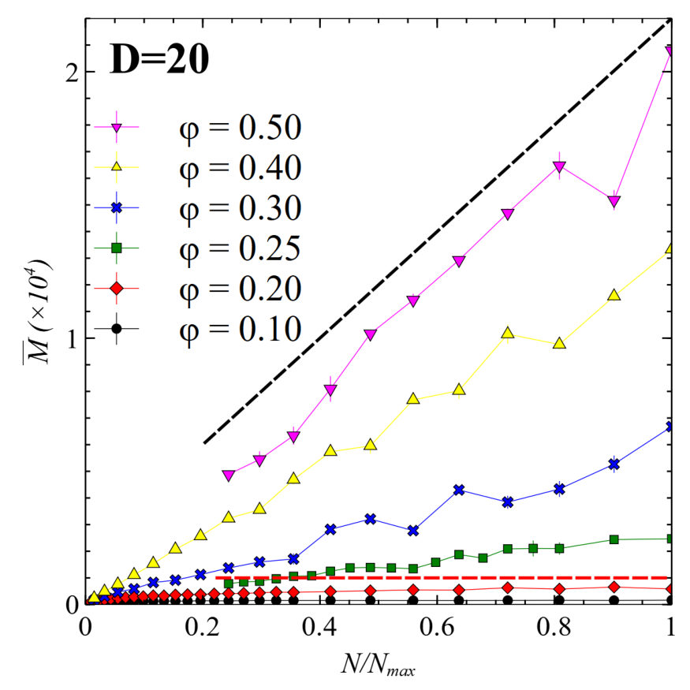
<figcaption class="paper-figure-caption"><b>Fig 1.</b> FIG. 1. Total vortex mass, M, as a function of the total number of particles normalized by the</figcaption>
</figure>
<figure class="paper-figure-card">
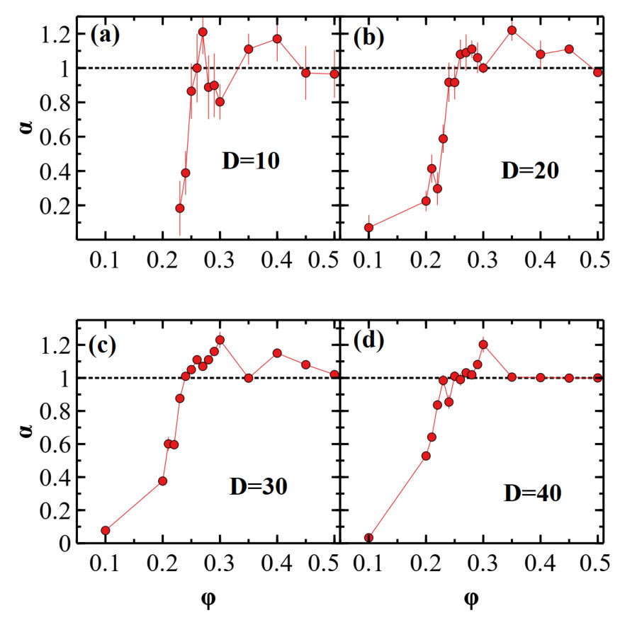
<figcaption class="paper-figure-caption"><b>Fig 2.</b> FIG. 2. Mass exponent α, as a function of the density for different obstacle sizes: (a) D = 10, (b)</figcaption>
</figure>
<figure class="paper-figure-card">
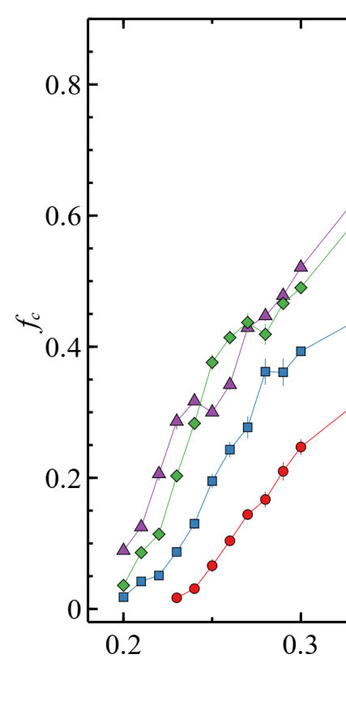
<figcaption class="paper-figure-caption"><b>Fig 3.</b> FIG. 3. Vortex mass fraction, fc, as a function of density, for all obstacle diameters.</figcaption>
</figure>
<figure class="paper-figure-card">
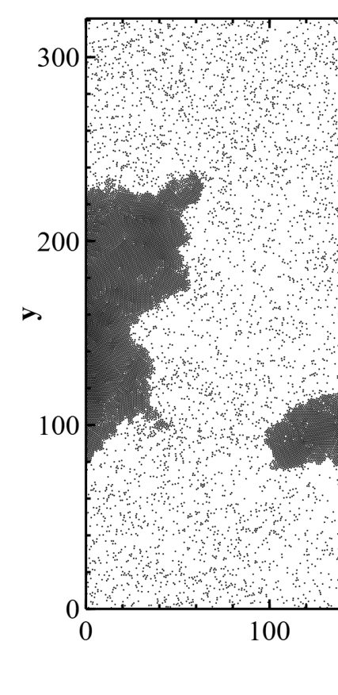
<figcaption class="paper-figure-caption"><b>Fig 4.</b> FIG. 4. System configuration at φ = 0.50, D = 40, and L = 320 (L/D = 8).</figcaption>
</figure>
<figure class="paper-figure-card">
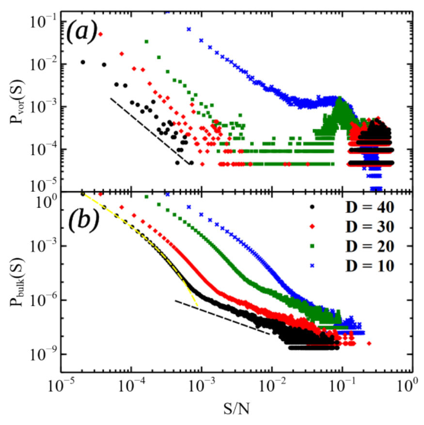
<figcaption class="paper-figure-caption"><b>Fig 5.</b> FIG. 5. Cluster Size Distribution for the vortex, Pvor(S), panel (a), and the bulk, Pbulk(S), panel</figcaption>
</figure>
</div>

<p><strong>Summary.</strong> This work studies active matter confined by circular obstacles, finding that the resulting vortices can undergo a phase transition. Below a critical density, the vortex remains localized, but above it, the vortex forms an extensive, obstacle-stabilized condensate. The findings establish a clear link between local geometry and macroscopic phase behavior in active systems.</p>
<p><strong>Why it may be interesting.</strong> The concept of obstacle-stabilized condensation in active matter provides a non-equilibrium mechanism for phase separation that is distinct from bulk MIPS, offering insights into pattern formation in complex active systems.</p>
<details>
<summary>Detailed structure</summary>
<p><strong>Main problem.</strong> The paper investigates how the mass and spatial extent of self-sustained vortices formed by dry active matter scale with system size, particularly analyzing the transition between localized and extensive condensed states.</p>
<p><strong>Main result.</strong> The system exhibits two distinct scaling regimes: at low densities, the vortex is localized, but above a critical density, the vortex mass grows extensively with the total particle number, indicating an obstacle-stabilized condensed state.</p>
<p><strong>Method.</strong> The study uses numerical simulations of Active Brownian Particles (ABPs) interacting with a fixed circular obstacle, analyzing scaling laws and comparing results to a derived kinetic model.</p>
<p><strong>Model / system.</strong> The system consists of dry active matter particles modeled by an overdamped Langevin equation, interacting via repulsive forces near a circular obstacle. The analysis focuses on the resulting vortex structures and their thermodynamic limit behavior.</p>
<p><strong>Key observables.</strong> Vortex mass (M), mean radius (R), maximum radius (R_max), and the scaling exponent ($\alpha$) relating vortex mass to particle number ($M \sim N^\alpha$).</p>
<p><strong>Important parameters / regimes.</strong> Global area fraction ($\phi$), obstacle size ($D$), system size ($L$), and the critical density ($\phi^*_b$) separating scaling regimes.</p>
<p><strong>Assumptions / limitations.</strong> The analysis assumes purely repulsive interactions and focuses on the thermodynamic limit behavior of the active system.</p>
<p><strong>Figures summary.</strong> Figures illustrate the density dependence of vortex mass scaling ($\alpha$ vs $\phi$), the vortex mass fraction ($f_c$ vs $\phi_t$), and the scaling of vortex radii ($R, R_{max}$) with system size ratios ($L/D$).</p>
<p><strong>Paper structure.</strong> The paper progresses by defining the physical model and observables, establishing the two distinct scaling regimes (low vs. high density), developing a kinetic model to explain the transition, and finally analyzing the geometric properties of the resulting condensate.</p>
</details>
<details>
<summary>Abstract</summary>
<p>Active Brownian particles confined to rigid substrates are known to accumulate near rigid boundaries and, under suitable conditions, undergo motility-induced phase separation (MIPS). A particularly intriguing manifestation of this behavior is the formation of self-sustained vortices around circular obstacles, which act as localized nucleation sites for particle aggregation. While several dynamical properties of such vortices have been previously characterized, their behavior in the thermodynamic limit remains largely unexplored. Here, we investigate how the mass and spatial extent of a dry active-matter vortex scale with system size. Using numerical simulations of repulsive active Brownian Particles interacting with a fixed circular obstacle, we measure the vortex mass, mean radius, and maximum radius as functions of the global area fraction, obstacle size, and system size. We find two distinct scaling regimes. At low densities, the vortex remains localized and its characteristic properties saturate as the system size increases. Above a critical density, however, the vortex mass grows extensively with the total number of particles, while its spatial dimensions scale linearly with the system size, indicating the emergence of an obstacle-stabilized condensed state.</p>
</details>
<p><sub><a href="#top">↑ back to top</a></sub></p>

<p><a id="paper-2609.19308"></a></p>
<h3 id="temporal-information-processing-on-a-4500-qubit-quantum-annealer"><a href="http://arxiv.org/abs/2609.19308v1">Temporal information processing on a 4,500-qubit quantum annealer</a></h3>
<p><strong>Authors:</strong> Antonio Sannia, Roberto Menta, Pratik Sathe, Dario De Santis, Vittorio Giovannetti, Luis Pedro García-Pintos, Davide Venturelli, Gian Luca Giorgi, Roberta Zambrini, Francesco Caravelli<br>
<strong>Type:</strong> both · <strong>Category:</strong> disordered systems and neural networks · <strong>PDF:</strong> <a href="https://arxiv.org/pdf/2609.19308v1">https://arxiv.org/pdf/2609.19308v1</a><br>
<strong>Analysis basis:</strong> full PDF text, analyzed in chunks
<strong>Topic relevance:</strong> <code>QC/QI experiment</code> <strong>3/5</strong> · <code>analog quantum simulation</code> <strong>1/5</strong> · <code>quantum measurements</code> <strong>1/5</strong></p>
<div class="figure-strip-hint">↔ Scroll figures horizontally</div>
<div class="paper-figures-scroll">
<figure class="paper-figure-card">
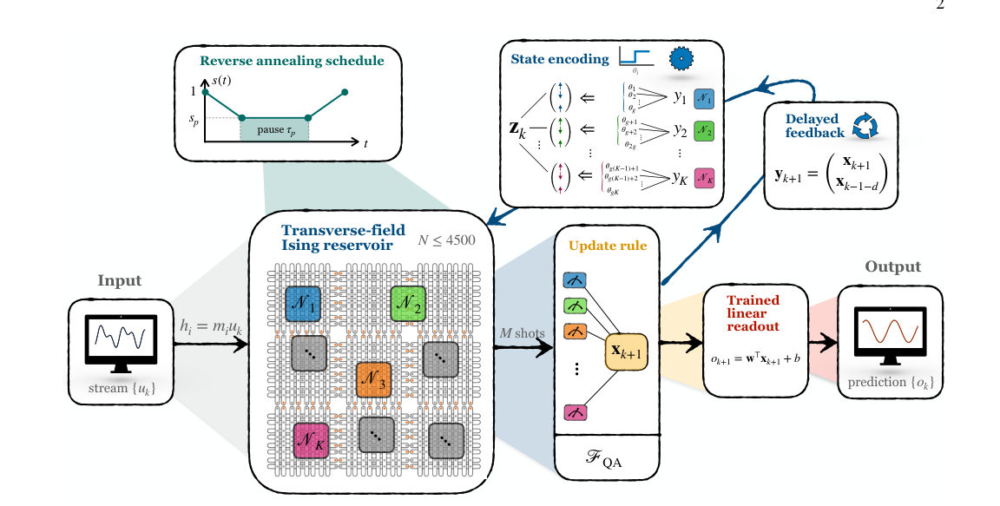
<figcaption class="paper-figure-caption"><b>Fig 1.</b> FIG. 1. Quantum reservoir computing on a quantum annealer. At each time step k, the input uk is encoded into the local fields of the transverse-field Ising Hamiltonian via random masks, hi = miuk. The reservoir state is combined with components delayed by d time steps and discretized using qubit-dependent random thresholds θi to define the initial spin configuration for reverse annealing. The final state is sampled M times, and the measured spins are coarse-grained over groups of g physical qubits to obtain the next reservoir state. Only the linear readout is trained, while all quantum-reservoir parameters remain fixed.</figcaption>
</figure>
<figure class="paper-figure-card">
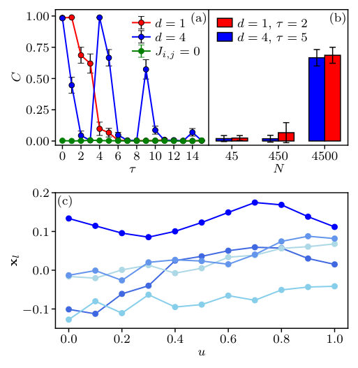
<figcaption class="paper-figure-caption"><b>Fig 2.</b> FIG. 2. Reservoir response to real-valued random input streams. (a) Linear memory capacity versus delay τ for feedback delays d = 1 and d = 4, for Jij ∈[−0.1, 0.1] compared with the non-interacting case Jij = 0, for N = 4,500 physical qubits. (b) Linear memory capacity versus reservoir size N. (c) Representative reservoir-state components xl after a constant input stream of value u, for d = 1 and N = 4,500. In all the panels, M = 103 measurements and K = 45 reservoir nodes are used. Error bars in (a)-(b) indicate the standard deviation over five independent realizations of couplings, masks, and input data.</figcaption>
</figure>
<figure class="paper-figure-card">
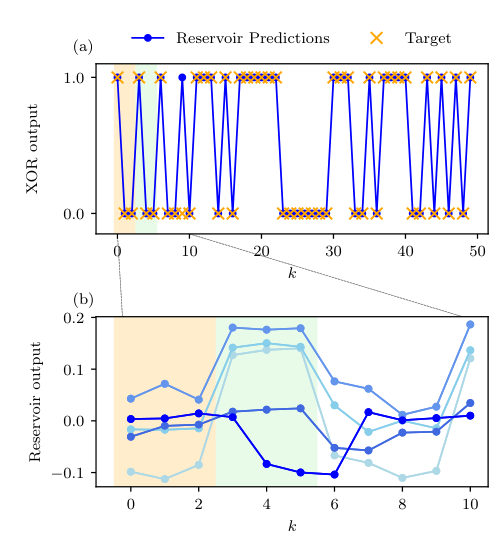
<figcaption class="paper-figure-caption"><b>Fig 3.</b> FIG. 3. XOR task. (a) Target values and reservoir predictions over discrete time steps during the test phase. (b) Representative components of the reservoir response over time for a smaller test segment. The reservoir uses feedback delay d = 1; magnetizations are estimated from M = 103 measurements to compute K = 45 outputs.</figcaption>
</figure>
<figure class="paper-figure-card">
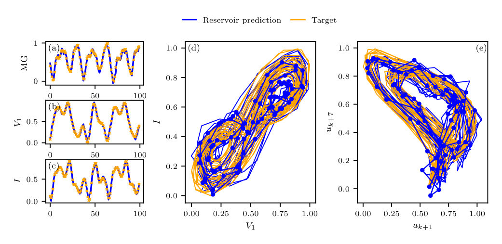
<figcaption class="paper-figure-caption"><b>Fig 4.</b> FIG. 4. Chaotic time-series forecasting. Reservoir predictions and target values for a representative 100-point segment of the test set: (a) Mackey–Glass series, and the (b) V1 and (c) I components of the double-scroll system. Chaotic attractors reconstructed from the Double-Scroll (d) and Mackey–Glass (e) series. The reservoir hyperparameters are d = 1, M = 103, and K = 45. For the attractor reconstruction shown in panel (d), the output layer was built by combining the outputs of the five reservoir realizations, all driven by the same input stream. All the other panels refer to one representative reservoir realization.</figcaption>
</figure>
</div>

<p><strong>Summary.</strong> This paper reports the largest-scale quantum machine learning experiment to date, implementing a Quantum Reservoir Computing model on a 4,500-qubit quantum annealer. By leveraging the complex, non-linear dynamics of reverse annealing, the model successfully processes temporal data, demonstrating memory retention and accurately forecasting chaotic time series. This establishes quantum annealers as a scalable platform for advanced quantum machine learning applications.</p>
<p><strong>Why it may be interesting.</strong> The work directly bridges quantum computation hardware (quantum annealers) with advanced machine learning paradigms (Reservoir Computing), providing empirical evidence of quantum advantage in complex time-series analysis, which is highly relevant to open quantum systems modeling.</p>
<details>
<summary>Detailed structure</summary>
<p><strong>Main problem.</strong> The paper addresses the challenge of creating large-scale, expressive quantum machine learning models capable of processing complex temporal data while avoiding prohibitively expensive training procedures.</p>
<p><strong>Main result.</strong> They demonstrate that quantum annealers can successfully process temporal data up to 4,500 qubits, showing memory revivals and accurately forecasting chaotic time series, proving the platform's scalability.</p>
<p><strong>Method.</strong> The authors implement a Quantum Reservoir Computing (QRC) protocol, using the intrinsic, non-linear dynamics generated by reverse annealing on the quantum annealer to map temporal inputs into a high-dimensional quantum feature space.</p>
<p><strong>Model / system.</strong> The physical platform is a programmable superconducting quantum annealer (up to 4,500 qubits). The model utilizes the native many-body dynamics generated by reverse annealing of a transverse-field Ising Hamiltonian, employing a feedback delay to enhance memory.</p>
<p><strong>Key observables.</strong> Memory capacity (quantified by correlation coefficient), classification accuracy (for XOR task), and Normalized Mean Squared Error (NMSE) for forecasting chaotic time series.</p>
<p><strong>Important parameters / regimes.</strong> Number of qubits (up to 4,500), feedback delay ($d$), and the annealing schedule parameters.</p>
<p><strong>Assumptions / limitations.</strong> The primary assumption is that the complex, interacting dynamics generated during annealing are essential for memory retention, as non-interacting reservoirs fail to retain memory.</p>
<p><strong>Figures summary.</strong> Figures illustrate the QRC schematic, memory capacity vs. delay (showing revivals), successful solving of the XOR task, and the ability to forecast chaotic time series like Mackey-Glass and double-scroll systems.</p>
<p><strong>Paper structure.</strong> The paper introduces the QRC framework, details the experimental implementation on the annealer, validates the necessity of quantum interactions by comparing it to non-interacting models, and finally benchmarks the model's performance on nonlinear tasks and chaotic time-series forecasting.</p>
</details>
<details>
<summary>Abstract</summary>
<p>Quantum machine learning could uncover statistical structure beyond the reach of classical models, but this requires quantum models large and expressive enough to be useful and cheap enough to read out. Most approaches optimize many quantum parameters and are thus limited by expensive training loops. Here we report a quantum machine-learning model implemented on a programmable superconducting quantum annealer that processes temporal data at large scale using up to 4,500 qubits-the largest quantum machine-learning experiment performed to date. Following the quantum reservoir computing paradigm, the untrained native many-body dynamics generated by reverse annealing is directly used to process temporal data. We prove that the interactions produced during annealing are indispensable-a non-interacting reservoir retains no memory of its input. We evaluate our model experimentally on standard memory benchmarks and demonstrate that it can successfully forecast chaotic time series. These results establish quantum annealers as a scalable platform for large-scale quantum machine learning.</p>
</details>
<p><sub><a href="#top">↑ back to top</a></sub></p>

<p><a id="paper-2609.19619"></a></p>
<h3 id="a-restricted-boltzmann-machine-with-quantum-state-visible-units"><a href="http://arxiv.org/abs/2609.19619v1">A Restricted Boltzmann Machine with Quantum-State Visible Units</a></h3>
<p><strong>Authors:</strong> Zhe-Hao Zhang, Yi-Cong Yu, Xiaoming Cai, Hai-Qing Lin<br>
<strong>Type:</strong> theory · <strong>Category:</strong> disordered systems and neural networks · <strong>PDF:</strong> <a href="https://arxiv.org/pdf/2609.19619v1">https://arxiv.org/pdf/2609.19619v1</a><br>
<strong>Analysis basis:</strong> full PDF text, analyzed in chunks
<strong>Topic relevance:</strong> <code>analog quantum simulation</code> <strong>3/5</strong> · <code>quantum measurements</code> <strong>1/5</strong></p>
<div class="figure-strip-hint">↔ Scroll figures horizontally</div>
<div class="paper-figures-scroll">
<figure class="paper-figure-card">
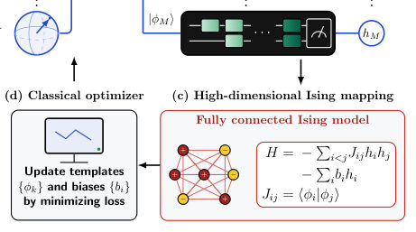
<figcaption class="paper-figure-caption"><b>Fig 1.</b> FIG. 1. Schematic of the quantum-state visible RBM. (a) A normalized many-body state |Ψ⟩serves directly as the vis- ible input. (b) Each binary hidden unit hj is associated with a normalized quantum template |ˆϕj⟩, implemented by a parametrized circuit, together with a classical gain and hid- den bias. (c) In the linear high-dimensional limit, integration over visible states yields a fully connected Ising model with weighted Gram couplings Jij = ¯κi¯κj⟨ˆϕi|ˆϕj⟩. (d) A classical optimizer updates the circuit parameters, gains, and biases by minimizing the loss.</figcaption>
</figure>
<figure class="paper-figure-card">
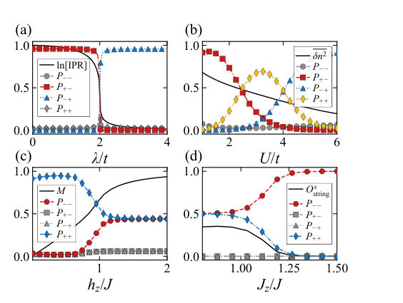
<figcaption class="paper-figure-caption"><b>Fig 2.</b> FIG. 2. Phase classification by the minimal quantum-state visible RBM with two hidden units. Colored curves give the conditional probabilities PRBM (P−−, P+−, P−+ and P++), the black solid curve shows conventional physical indicators. (a) Aubry–André model: inverse participation ratio rescaled across the localization transition at λ/t = 2 (L = 377 and β = ( √</figcaption>
</figure>
<figure class="paper-figure-card">
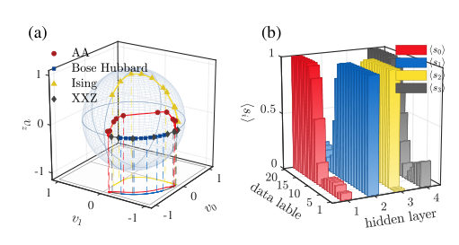
<figcaption class="paper-figure-caption"><b>Fig 3.</b> FIG. 3. Quantum-state feature extraction. (a) Unit-sphere trajectories for the four benchmark data sets constructed from v0, v1, and vz. (b) Conditional hidden-spin means ⟨σi⟩for four learned templates and 20 transverse-field Ising ground states, ordered by their data labels. The distinct response profiles provide a multicomponent representation of the input states beyond phase classification.</figcaption>
</figure>
<figure class="paper-figure-card">
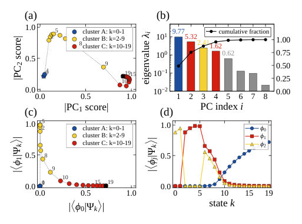
<figcaption class="paper-figure-caption"><b>Fig 4.</b> FIG. 4. PCA and quantum-RBM representations of the same 20 transverse-field Ising states. (a) Absolute scores along the first two principal components; colors mark the three state regions k = 0–1, 2–9, and 10–19. (b) Leading PCA eigen- values and their cumulative fraction. (c) The same states represented by the first two of three learned overlap features. (d) All three features |⟨ϕj|Ψk⟩|.</figcaption>
</figure>
</div>

<p><strong>Summary.</strong> This paper adapts the Restricted Boltzmann Machine (RBM) to accept quantum states as input, overcoming the mathematical difficulties associated with continuous quantum variables. By deriving controlled high-dimensional limits, the authors create robust algorithms that successfully map complex quantum many-body states onto trainable feature representations. This demonstrates a powerful ML tool for analyzing quantum phase transitions.</p>
<p><strong>Why it may be interesting.</strong> This work provides a novel machine learning framework to analyze quantum many-body physics by mapping complex quantum states onto trainable, classical optimization objectives, which is highly relevant for understanding quantum phase transitions.</p>
<details>
<summary>Detailed structure</summary>
<p><strong>Main problem.</strong> The paper addresses the challenge of constructing a Restricted Boltzmann Machine (RBM) where the visible input is a quantum state, rather than a classical configuration.</p>
<p><strong>Main result.</strong> The authors derive two tractable, controlled high-dimensional limits—a Hopfield-type network and a Gram likelihood objective—allowing the RBM to perform quantum-phase recognition and feature extraction.</p>
<p><strong>Method.</strong> The core method involves regularizing the continuous likelihood integral over the quantum state space using spherical convolution and deriving specific high-dimensional limits to make the optimization tractable.</p>
<p><strong>Model / system.</strong> The model is a quantum-state visible RBM. It is benchmarked across several 1D quantum many-body systems, including the Aubry–André model, Bose–Hubbard model, and transverse-field Ising chain.</p>
<p><strong>Key observables.</strong> Feature extraction capability, state recognition across quantum phase transitions, and the resulting coupling/Gram matrices ($J$ or $G$).</p>
<p><strong>Important parameters / regimes.</strong> The high dimension $d$ of the visible space, and the controlled scaling factors ($\kappa_j$) used in the high-dimensional limits.</p>
<p><strong>Assumptions / limitations.</strong> The primary difficulty is the ill-posed nature of the continuous likelihood integral, which necessitates deriving controlled high-dimensional limits.</p>
<p><strong>Figures summary.</strong> Figure 1 schematically shows the RBM structure, linking the quantum state input to the derived Ising and Gram model forms. Figures 2 and 4 compare the RBM's feature representation against standard physical diagnostics and PCA for various quantum models.</p>
<p><strong>Paper structure.</strong> The paper first introduces the quantum-state RBM and its inherent mathematical difficulties. It then derives and analyzes two controlled high-dimensional limits (linear/Hopfield and quadratic/Gram). Finally, it applies these derived algorithms to benchmark quantum many-body systems to demonstrate physical feature extraction.</p>
</details>
<details>
<summary>Abstract</summary>
<p>We construct a restricted Boltzmann machine (RBM) whose visible input is a quantum state rather than a classical configuration. Each hidden unit carries a trainable quantum template prepared by a parametrized circuit and converts its overlap with the input into a feature. Treating quantum states as high-dimensional continuous visible objects creates nontrivial normalization and scaling problems. We regularize the continuous likelihood and derive two controlled high-dimensional limits, yielding a Hopfield-type network with continuous Hilbert-space patterns and a data-augmented Gram likelihood. The resulting algorithms are compact and use trainable circuit-prepared templates as measurement intermediaries between quantum data and classical optimization. Numerical simulations across several many-body systems demonstrate effective quantum-phase recognition and multicomponent feature extraction.</p>
</details>
<p><sub><a href="#top">↑ back to top</a></sub></p>

<p><a id="paper-2609.20013"></a></p>
<h3 id="fragmentation-of-quantum-fluid-in-dipolar-bose-einstein-condensate"><a href="http://arxiv.org/abs/2609.20013v1">Fragmentation of Quantum Fluid in dipolar Bose-Einstein condensate</a></h3>
<p><strong>Authors:</strong> Shivam Singh, Ayan Khan<br>
<strong>Type:</strong> theory · <strong>Category:</strong> quantum gases · <strong>PDF:</strong> <a href="https://arxiv.org/pdf/2609.20013v1">https://arxiv.org/pdf/2609.20013v1</a><br>
<strong>Analysis basis:</strong> full PDF text, analyzed in chunks
<strong>Topic relevance:</strong> <code>analog quantum simulation</code> <strong>3/5</strong> · <code>Keldysh / 2PI / non-Gaussian methods</code> <strong>1/5</strong></p>
<div class="figure-strip-hint">↔ Scroll figures horizontally</div>
<div class="paper-figures-scroll">
<figure class="paper-figure-card">
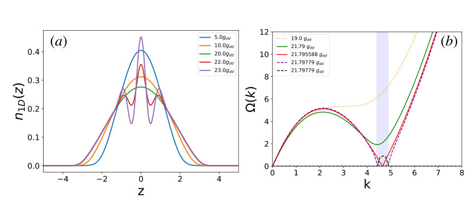
<figcaption class="paper-figure-caption"><b>Fig 1.</b> FIG. 1. (color online) (a) The ground state density profile n1D(z) with spatial coordinate z is reported here. In this case other interactions except DDI is considered to be fixed. The magnitude of MF interaction strength is set at g0 = 4πa and it is being attractive in nature, the BMF strength is g′/g0 = 60 √</figcaption>
</figure>
<figure class="paper-figure-card">
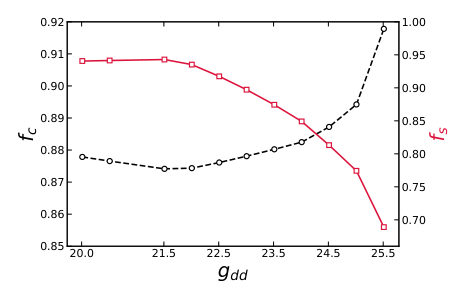
<figcaption class="paper-figure-caption"><b>Fig 2.</b> FIG. 2. (Color online) Superfluid fraction (red dashed curve) and condensate fraction (black dashed curve) as functions of the dipolar interaction strength gdd is reported here. The results are obtained from the solution presented in Fig. 1. The figure clearly illustrates the distinct dependence of the superfluid and condensate fractions on the dipolar interaction.</figcaption>
</figure>
<figure class="paper-figure-card">
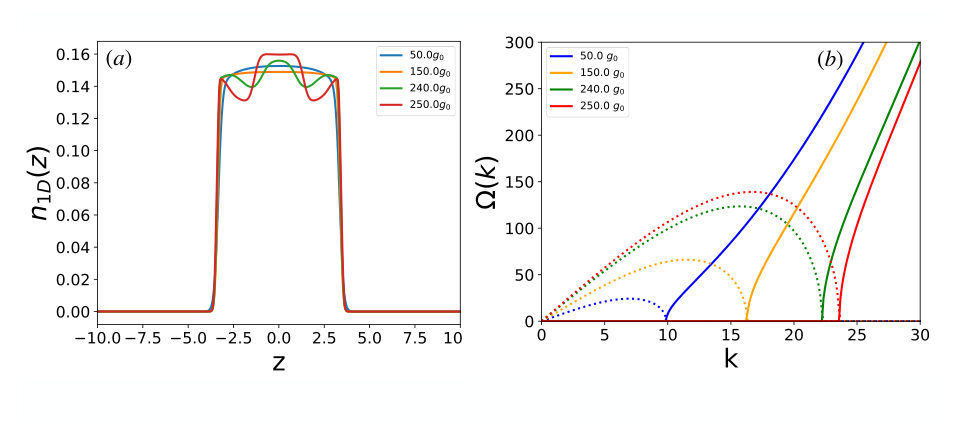
<figcaption class="paper-figure-caption"><b>Fig 3.</b> FIG. 3. (color online) (a) The ground state density profile n1D(z) with spatial coordinate z is depicted here. (b) The corre- sponding dispersion relation is exhibited here. Here, MF interaction is varied from −50g0 to −250g0. BMF strength used as g′/g0 = 60 √</figcaption>
</figure>
<figure class="paper-figure-card">
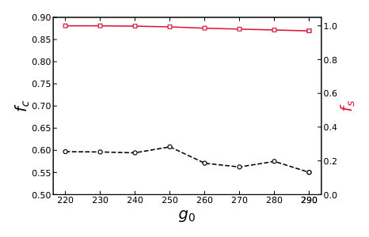
<figcaption class="paper-figure-caption"><b>Fig 4.</b> FIG. 4. (color online) The superfluid fraction and condensate fraction are depicted here. The red solid and black dashed lines describes fs and fc respectively for different values of 2B interaction strength (g0).</figcaption>
</figure>
<figure class="paper-figure-card">
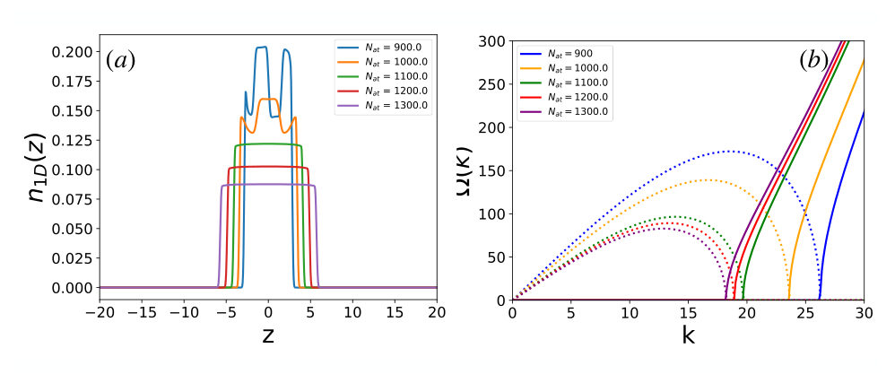
<figcaption class="paper-figure-caption"><b>Fig 5.</b> FIG. 5. (color online) (a) Density profiles of the dipolar Bose gas with varying atom number is presented here. The atom number varies from 900 to 1300. In this case, the two-body (2B) interaction strength is fixed at −250g0. The contributions from the 2B, 3B, and BMF correction are considered to be attractive (BMF strength used as g′/g0 = 60 √</figcaption>
</figure>
</div>

<p><strong>Summary.</strong> This paper theoretically investigates how competing interactions (mean-field, three-body, and dipolar) cause a quantum fluid in a dipolar BEC to fragment. The research predicts a roton instability, marking a transition into a super-solid phase, which is evidenced by measurable changes in the superfluid and condensate fractions.</p>
<p><strong>Why it may be interesting.</strong> This work directly addresses the complex many-body physics of dipolar quantum gases, linking interaction competition to exotic phases like supersolids and providing quantitative diagnostics ($f_s, f_c$) for these transitions.</p>
<details>
<summary>Detailed structure</summary>
<p><strong>Main problem.</strong> The study investigates the fragmentation of a quantum fluid within a dipolar Bose-Einstein condensate (BEC) due to the competition among various interaction types.</p>
<p><strong>Main result.</strong> The system can undergo a roton instability, signaling a phase transition from a superfluid state to a super-solid or crystalline array, which is confirmed by changes in superfluid and condensate fractions.</p>
<p><strong>Method.</strong> The analysis employs theoretical modeling using the Gross-Pitaevskii equation, analyzing the Bogoliubov spectrum to determine excitation modes and stability.</p>
<p><strong>Model / system.</strong> The physical system is a dipolar BEC, modeled in a quasi-one-dimensional geometry. The Hamiltonian incorporates mean-field, beyond mean-field, three-body, and non-local dipole-dipole interactions.</p>
<p><strong>Key observables.</strong> Superfluid fraction ($f_s$), condensate fraction ($f_c$), excitation dispersion relation ($\Omega(k)$), and density modulation.</p>
<p><strong>Important parameters / regimes.</strong> Dipolar interaction strength ($\epsilon_{dd}$ or $g_{dd}$), Mean-Field (MF) interaction strength, and particle number ($N_{at}$).</p>
<p><strong>Assumptions / limitations.</strong> The system is treated in a quasi-one-dimensional (Q1D) geometry, and the analysis relies on linear stability theory (Bogoliubov spectrum).</p>
<p><strong>Figures summary.</strong> Figures illustrate density profiles showing fragmentation, dispersion relations highlighting roton minima and instability regions, and plots showing $f_s$ and $f_c$ changing as interaction strengths or particle numbers are varied.</p>
<p><strong>Paper structure.</strong> The paper systematically analyzes the theoretical framework by incorporating multiple interaction terms into the governing equation, followed by detailed analysis of the excitation spectrum, superfluid/condensate fractions, and the resulting phase transitions (roton instability $
ightarrow$ supersolid).</p>
</details>
<details>
<summary>Abstract</summary>
<p>In this article, we study the dipolar Bosonic quantum fluid. The fluid experiences mean-field, beyond mean-field, and three body interactions. We investigate their competition with dipolar interaction and fragmentation as a result of this competition. We further investigate the elementary excitations and note two distinct dispersion regimes, namely roton-mode and modulational instability. We support our observation by calculating the superfluid fraction and the condensate fraction.</p>
</details>
<p><sub><a href="#top">↑ back to top</a></sub></p>

<p><a id="paper-2609.20433"></a></p>
<h3 id="khinchins-ergodicity-and-typicality-in-statistical-mechanics"><a href="http://arxiv.org/abs/2609.20433v1">Khinchin's ergodicity and typicality in statistical mechanics</a></h3>
<p><strong>Authors:</strong> Dario Lucente, Marco Baldovin, Giacomo Gradenigo, Angelo Vulpiani<br>
<strong>Type:</strong> theory · <strong>Category:</strong> statistical mechanics · <strong>PDF:</strong> <a href="https://arxiv.org/pdf/2609.20433v1">https://arxiv.org/pdf/2609.20433v1</a><br>
<strong>Analysis basis:</strong> full PDF text, analyzed in chunks
<strong>Topic relevance:</strong> <code>scars &amp; prethermalization</code> <strong>3/5</strong> · <code>Frenkel-Kontorova</code> <strong>1/5</strong></p>
<div class="figure-strip-hint">↔ Scroll figures horizontally</div>
<div class="paper-figures-scroll">
<figure class="paper-figure-card">
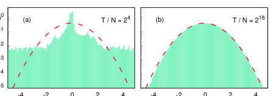
<figcaption class="paper-figure-caption"><b>Fig 1.</b> FIG. 1. Empirical density of the momentum of the j-th particle, measured in the time interval [0, T], starting from the non-equilibrium initial condition described in the main text. Two values of T are shown. Red curves correspond to the Maxwell-Boltzmann distribution. Left and right panel refer to short and long time evolutions. Here N = 103, j = 123.</figcaption>
</figure>
<figure class="paper-figure-card">
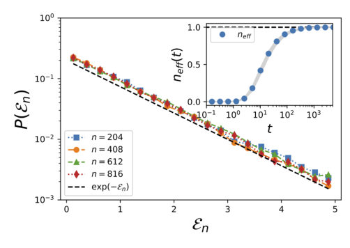
<figcaption class="paper-figure-caption"><b>Fig 2.</b> FIG. 2. Main panel: probability distribution of the single particle energy of the rotated modes for different beads. The black dashed lines is the theoretical exponential distribution. Inset: effective number of degrees of freedom as a function of time. Blue squares represent an average performed over 30 realizations of random rotations, while the grey shaded area corresponds to the evolution of each of these 30 realizations. The horizontal black dashed line corresponds to the equipar- tition value neff = 1.</figcaption>
</figure>
<figure class="paper-figure-card">

<figcaption class="paper-figure-caption"><b>Fig 3.</b> FIG. 3. Values of IPR as function of the eigenfrequency ω2 k. Different panels corresponds to different system sizes N. The dashed black lines is the value of the IPR of the linear chain without disorder, when the eigenvectors are all delocalized.</figcaption>
</figure>
<figure class="paper-figure-card">

<figcaption class="paper-figure-caption"><b>Fig 4.</b> FIG. 4. Distributions of energy per particle ec computed on a subsystem of size Nc = N</figcaption>
</figure>
<figure class="paper-figure-card">

<figcaption class="paper-figure-caption"><b>Fig 5.</b> FIG. 5. Energy per particle in a subsystem. Red squares and blue circle refer to kinetic and potential energy respectively, normalized with temperature. The solid lines correspond to the theoretical predictions. Here N = 256, Nc = 16.</figcaption>
</figure>
</div>

<p><strong>Summary.</strong> This paper re-examines the ergodic hypothesis, arguing that the success of statistical mechanics stems not from the dynamics being chaotic, but from the sheer number of degrees of freedom in the system. By analyzing integrable models like the Toda chain, the authors show that key thermodynamic distributions emerge robustly in the thermodynamic limit, weakening the strict requirement of ergodicity.</p>
<p><strong>Why it may be interesting.</strong> It provides a deep theoretical underpinning for why equilibrium statistical mechanics works, suggesting that the failure of strict ergodicity does not invalidate macroscopic thermodynamic predictions in the large-$N$ limit.</p>
<details>
<summary>Detailed structure</summary>
<p><strong>Main problem.</strong> The paper addresses the fundamental connection between time averages (dynamics) and phase averages (ensemble theory) in statistical mechanics, specifically challenging the necessity of the strong ergodic hypothesis.</p>
<p><strong>Main result.</strong> Key predictions of equilibrium statistical mechanics, such as the Maxwell-Boltzmann distribution, can hold true even in classically integrable systems where strong ergodicity is violated, suggesting the role of the large number of degrees of freedom is paramount.</p>
<p><strong>Method.</strong> The authors use analytical derivations, asymptotic analysis of partition functions, and numerical simulations on integrable models to test the convergence of time averages to ensemble averages.</p>
<p><strong>Model / system.</strong> The analysis focuses on classical Hamiltonian systems, including the harmonic chain and the non-linear Toda model. These systems are used to test the ergodic hypothesis in the context of the thermodynamic limit ($N 	o \infty$).</p>
<p><strong>Key observables.</strong> Time averages of observables, the Maxwell-Boltzmann distribution, the intensive quantity $y$ used to test typicality, and the specific heat.</p>
<p><strong>Important parameters / regimes.</strong> The number of degrees of freedom ($N$), the temperature parameter ($eta$), and the limit of large $N$.</p>
<p><strong>Assumptions / limitations.</strong> The primary assumption is the validity of Khinchin's view: that statistical mechanics relies only on the large number of degrees of freedom and the choice of extensive observables, irrespective of chaotic dynamics.</p>
<p><strong>Figures summary.</strong> Figures illustrate the distribution of time averages (e.g., $w(t^*)$) collapsing onto a single curve as $N$ increases, and show the standard deviations of time averages of conserved quantities remaining small.</p>
<p><strong>Paper structure.</strong> The paper progresses by first defining the ergodic problem, then analyzing integrable systems (like the harmonic chain) to show expected distributions arise despite non-chaos, and finally applying this framework to the Toda model to demonstrate typicality in the thermodynamic limit.</p>
</details>
<details>
<summary>Abstract</summary>
<p>The formulation of statistical mechanics in terms of ensembles, originally proposed by Gibbs, has proved to be extremely effective in describing the equilibrium state of many-particle systems, in the most diverse contexts (critical phenomena, quantum mechanics, biophysics, just to mention a few). The reasons of this success are still debated, and the connection between dynamics and probability in large systems remains somehow elusive. Indeed, in order to derive the main results of equilibrium statistical mechanics, strong assumptions on the ergodicity of the dynamics are usually required. Nonetheless, empirical observations seem to suggest that the predictions of the theory hold true even when such assumptions are not verified. In this paper we reconsider the point of view put forward by Khinchin, stating that the only relevant ingredients for the validity of statistical mechanics are the large number of degrees of freedom in the system and the choice of extensive observables, irrespectively of the details of the microscopic dynamics. In particular, the presence of dynamical chaos is not required. To this aim, we discuss some analytical and numerical results on a couple of classical integrable systems, the harmonic chain and the Toda model, showing that many important features predicted by equilibrium statistical mechanics, as for instance Maxwell-Boltzmann distribution, are found even in absence of chaos.</p>
</details>
<p><sub><a href="#top">↑ back to top</a></sub></p>

<p><a id="paper-2609.19931"></a></p>
<h3 id="quantum-walkscore-benchmarking-quantum-computers-on-the-graph-nodefinding-problem"><a href="http://arxiv.org/abs/2609.19931v1">Quantum WalkScore: Benchmarking Quantum Computers on the Graph Nodefinding Problem</a></h3>
<p><strong>Authors:</strong> Noé Olivier, Michel Nowak<br>
<strong>Type:</strong> both · <strong>Category:</strong> quantum information and computing · <strong>PDF:</strong> <a href="https://arxiv.org/pdf/2609.19931v1">https://arxiv.org/pdf/2609.19931v1</a><br>
<strong>Analysis basis:</strong> full PDF text, analyzed in chunks
<strong>Topic relevance:</strong> <code>QC/QI experiment</code> <strong>3/5</strong> · <code>quantum measurements</code> <strong>1/5</strong></p>
<div class="figure-strip-hint">↔ Scroll figures horizontally</div>
<div class="paper-figures-scroll">
<figure class="paper-figure-card">

<figcaption class="paper-figure-caption"><b>Fig 1.</b> Fig. 1: Representations of the graph nodefinding problem. The cycle graphs (a) are generated for n = 4, i.e. 4 qubits, while the 2D-torus graphs (b) are generated for n = 3, i.e. 3 qubits per dimension. The target nodes (blue) are located at a distance d = dmax (left) and d &lt; dmax (right) from the source node |0⟩(yellow).</figcaption>
</figure>
<figure class="paper-figure-card">

<figcaption class="paper-figure-caption"><b>Fig 2.</b> Fig. 3: Representation of the number of possible paths to each target node for a d-step random walk on a 64-node 2D-torus graph.</figcaption>
</figure>
<figure class="paper-figure-card">

<figcaption class="paper-figure-caption"><b>Fig 3.</b> Fig. 4: QWScycle performance results (a) and algorithm resources (b) under suff-perf and best-perf scenarios on noiseless QPU.</figcaption>
</figure>
<figure class="paper-figure-card">

<figcaption class="paper-figure-caption"><b>Fig 4.</b> Fig. 5: Algorithmic and native implementation complexity scaling under suff-perf (a) and best- perf (b) scenarios for cycle graphs on IBM Heron QPU.</figcaption>
</figure>
<figure class="paper-figure-card">

<figcaption class="paper-figure-caption"><b>Fig 5.</b> Fig. 6: QWStorus performance results (a) and algorithm resources (b) under suff-perf and best-perf scenarios on noiseless QPU.</figcaption>
</figure>
</div>

<p><strong>Summary.</strong> This paper introduces Quantum WalkScore (QWS), a standardized benchmark to test quantum computers on the graph nodefinding problem using quantum walks and amplitude amplification. It quantifies performance by determining the largest solvable problem size before the success probability drops below a defined threshold. The work provides both theoretical scaling analysis and experimental results on real quantum hardware.</p>
<p><strong>Why it may be interesting.</strong> The rigorous benchmarking methodology and the focus on application-specific metrics (like graph search success probability) provide a concrete, hardware-agnostic framework for assessing quantum computational utility.</p>
<details>
<summary>Detailed structure</summary>
<p><strong>Main problem.</strong> The paper introduces Quantum WalkScore (QWS) to benchmark the performance of near-term and fault-tolerant quantum computers on the graph nodefinding problem (marked-vertex search).</p>
<p><strong>Main result.</strong> QWS provides a scalable, quantitative measure of a quantum computer's ability to solve graph search problems, showing performance drops significantly on current hardware for non-trivial problem sizes.</p>
<p><strong>Method.</strong> The benchmark combines discrete-time quantum walks (DTQW) with quantum amplitude amplification (AA) to estimate the success probability of finding a target node on structured graphs.</p>
<p><strong>Model / system.</strong> The problem is modeled on cycle and 2D-torus graphs, and the evaluation is performed using gate-based quantum processors, specifically citing IBM's Heron and Nighthawk architectures.</p>
<p><strong>Key observables.</strong> Success probability ($p$) of finding the target node, and the resulting Quantum WalkScore (QWS).</p>
<p><strong>Important parameters / regimes.</strong> Problem size defined by $(n, d)$ (qubit count and distance), and circuit parameters like the number of DTQW steps ($ ext{num_w}$) and AA iterations ($  ext{num_aa}$).</p>
<p><strong>Assumptions / limitations.</strong> The benchmark assumes the ability to execute deep, complex circuits, with hardware limitations causing success probabilities to drop below theoretical thresholds quickly.</p>
<p><strong>Figures summary.</strong> Figures illustrate the graph nodefinding problem on cycle and torus graphs, show the quantum circuit implementation of the DTQW-AA sequence, and plot QWS performance (success probability vs. problem size) across different IBM hardware generations.</p>
<p><strong>Paper structure.</strong> The paper reviews existing quantum benchmarking methods, details the QWS protocol using DTQW and AA, presents theoretical scaling laws for circuit depth, and concludes with experimental results comparing performance across various hardware platforms.</p>
</details>
<details>
<summary>Abstract</summary>
<p>Recent advances in quantum computing hardware toward fault-tolerance have increased interest in evaluating near-term quantum platforms on application-relevant quantum algorithms. In this work, we introduce Quantum WalkScore (QWS), a scalable application-oriented benchmark designed to assess the performance of NISQ and future fault-tolerant quantum computers in executing essential quantum routines --discrete-time quantum walks and quantum amplitude amplification-- to solve the graph nodefinding problem (marked-vertex search). QWS quantifies performance by scoring the largest problem size for which a designated target node can be found with success probability above a defined threshold. In addition to the complete protocol description, we provide example parameter-selection scenarios designed from noiseless simulation results and demonstrate QWS evaluation through experimental runs on multiple generations of IBM real quantum processors.</p>
</details>
<p><sub><a href="#top">↑ back to top</a></sub></p>

<p><a id="paper-2609.20029"></a></p>
<h3 id="statistical-delocalization-in-the-anyonic-aubry-andre-model"><a href="http://arxiv.org/abs/2609.20029v1">Statistical delocalization in the Anyonic Aubry-André model</a></h3>
<p><strong>Authors:</strong> Andoni Agirre, André Eckardt, Tobias Grass<br>
<strong>Type:</strong> theory · <strong>Category:</strong> other · <strong>PDF:</strong> <a href="https://arxiv.org/pdf/2609.20029v1">https://arxiv.org/pdf/2609.20029v1</a><br>
<strong>Analysis basis:</strong> full PDF text, analyzed in chunks
<strong>Topic relevance:</strong> <code>analog quantum simulation</code> <strong>3/5</strong> · <code>Frenkel-Kontorova</code> <strong>1/5</strong></p>
<div class="figure-strip-hint">↔ Scroll figures horizontally</div>
<div class="paper-figures-scroll">
<figure class="paper-figure-card">

<figcaption class="paper-figure-caption"><b>Fig 1.</b> Figure 1. (a,b) Fractal dimension D2 vs. AA potential strength V , at filling N = L (a) and filling L = 4N (b), for different values of θ. We obtain D2 from linear regression of −log IPR as a function of log D, at the available system sizes (see App. A). Error bars are obtained from stochastic resampling over a normal distribution of IPR values. (c,d) Gap ratio vs. V at filling one (L = 10), and at filling 1/4 (L = 20), for different values of θ. Error bars represent standard errors from ensemble averages.</figcaption>
</figure>
<figure class="paper-figure-card">

<figcaption class="paper-figure-caption"><b>Fig 2.</b> Figure 2. (a–c) Raw data of η vs V at filling 1 for different N, considering θ values for bosons (θ = 0), weak anyons (θ = 0.1π), strong anyons (θ = 0.5π), and (e–g) the corresponding collapsed data after FSS. In panels (d) and (h), we illustrate, for the case of weak anyons, the FSS based on gap ratio r.</figcaption>
</figure>
<figure class="paper-figure-card">

<figcaption class="paper-figure-caption"><b>Fig 3.</b> Figure 3. We plot the system parameters obtained from FSS with η and r, as a function of the statistical angle θ. In panels (a–c), we plot the critical potential strength Vc vs. θ. In panels (d–f), we plot the exponent ν vs. θ. Results at different fillings are shown: N/L = 1 in panels (a,d), N/L = 1/2 in panels (b,e), and N/L = 1/4 in panels (c,f). Error bars are the standard deviations after repeating FSS from resampling over 100 randomly generated distributions.</figcaption>
</figure>
<figure class="paper-figure-card">

<figcaption class="paper-figure-caption"><b>Fig 4.</b> Figure 4. Left-right imbalance ILR(t) for a half-filled chain (L = 12, N = 6) following a quench from the fully imbalanced initial state in Eq. (6).Panels (a)–(d) correspond to bosons (θ = 0), weak anyons (θ = 0.1π), strong anyons (θ = 0.5π), and pseudofermions (θ = π), respectively. Different curves show different values of the Aubry-André potential strength V . Increasing the statistical angle systematically enhances the relaxation of the imbalance, indicating a shift of the localization crossover towards larger values of V .</figcaption>
</figure>
<figure class="paper-figure-card">

<figcaption class="paper-figure-caption"><b>Fig 5.</b> Figure 5. Saturation imbalance analysis for filling 1/2 chains at different potential strengths. The saturation value of the LR imbalance ILR is shown as a function of the statistical angle θ for different system sizes for V = 4J (a) and V = 7J (c). Panels (b) and (d) show the saturation values of the imbalance plotted against 1/N for different θ values with V = 4J and V = 7J, respectively.</figcaption>
</figure>
</div>

<p><strong>Summary.</strong> This theoretical work explores how the inherent exchange statistics of anyons can drive many-body delocalization in a quasiperiodic 1D system, even in the absence of density-density interactions. By analyzing spectral properties and dynamics, the authors show that tuning the statistical phase $    heta$ systematically shifts the system's localization transition. This reveals that exchange statistics constitutes a fundamental, independent route to quantum delocalization in low-dimensional quantum matter.</p>
<p><strong>Why it may be interesting.</strong> This work directly addresses the interplay between particle statistics (anyons) and many-body dynamics, providing a novel, non-interaction-based mechanism to tune localization in 1D quantum systems, relevant to ultracold atomic simulations of exotic statistics.</p>
<details>
<summary>Detailed structure</summary>
<p><strong>Main problem.</strong> The study investigates enhanced many-body delocalization in quantum systems induced solely by the exchange statistics of anyons, contrasting with conventional many-body localization (MBL).</p>
<p><strong>Main result.</strong> Increasing the anyonic statistical phase systematically shifts the many-body localization crossover toward larger quasiperiodic potentials, establishing exchange statistics as an independent mechanism for delocalization.</p>
<p><strong>Method.</strong> The analysis employs finite-size scaling of spectral properties (gap ratio) and the inverse participation ratio (IPR), supplemented by dynamical probes like monitoring density imbalance after quenches.</p>
<p><strong>Model / system.</strong> The system is an anyonic Aubry-André (AA) quasiperiodic model in one dimension, described by a quadratic Hamiltonian involving anyon operators $a_j$. The statistics are controlled by the phase angle $  heta$.</p>
<p><strong>Key observables.</strong> Fractal dimension ($D_2$), Gap ratio ($r_k$), Inverse Participation Ratio (IPR), and long-time density imbalances.</p>
<p><strong>Important parameters / regimes.</strong> The statistical phase angle $   heta \in [0, 2\pi)$, the potential strength $V$, and the system filling $N/L$.</p>
<p><strong>Assumptions / limitations.</strong> The analysis relies on finite-size scaling, which may not conclusively distinguish between a true phase transition and a crossover regime.</p>
<p><strong>Figures summary.</strong> Figures illustrate the dependence of $D_2$ and the gap ratio on the potential strength $V$ for various $ heta$, and show the evolution of density imbalances over time for different statistical regimes.</p>
<p><strong>Paper structure.</strong> The paper systematically analyzes the localization transition using multiple diagnostics (spectral, IPR, dynamics) to map out how the statistical phase $  heta$ modifies the critical potential $V_c$ required for delocalization.</p>
</details>
<details>
<summary>Abstract</summary>
<p>Many-body localization is remarkable in that localization persists despite the presence of dynamical interactions. Here we demonstrate the converse phenomenon: enhanced many-body delocalization induced solely by exchange statistics. We study a Aubry-André quasiperiodic system of anyons in one dimension in the absence of density-density interactions. In terms of anyon operators, the system is described by a quadratic Hamiltonian. By analyzing the finite-size scaling of its spectral properties and the inverse participation ratio of many-body eigenstates, we find that increasing the anyonic statistical phase systematically shifts the many-body localization crossover toward larger quasiperdiodic potentials. We further confirm these findings using a dynamical probe, namely the persistence of an initial density imbalance following quenches. Our results establish exchange statistics as an independent mechanism capable of altering many-body localization, revealing a fundamentally distinct route to delocalization in one-dimensional quantum systems.</p>
</details>
<p><sub><a href="#top">↑ back to top</a></sub></p>

<p><a id="paper-2609.19857"></a></p>
<h3 id="tunable-flat-band-on-the-surface-of-a-rhombohedral-kagome-ferromagnet"><a href="http://arxiv.org/abs/2609.19857v1">Tunable flat band on the surface of a rhombohedral kagome ferromagnet</a></h3>
<p><strong>Authors:</strong> Xinglu Que, Qingyu He, Lihui Zhou, Lilian Prodan, Vladimir Tsurkan, István Kézsmárki, Hidenori Takagi, Dennis Huang<br>
<strong>Type:</strong> both · <strong>Category:</strong> strongly correlated electrons · <strong>PDF:</strong> <a href="https://arxiv.org/pdf/2609.19857v1">https://arxiv.org/pdf/2609.19857v1</a><br>
<strong>Analysis basis:</strong> full PDF text, analyzed in chunks
<strong>Topic relevance:</strong> <code>analog quantum simulation</code> <strong>3/5</strong> · <code>quantum measurements</code> <strong>1/5</strong></p>
<div class="figure-strip-hint">↔ Scroll figures horizontally</div>
<div class="paper-figures-scroll">
<figure class="paper-figure-card">

<figcaption class="paper-figure-caption"><b>Fig 1.</b> FIG. 1. Two routes to flat bands in layered kagome compounds. (a) Kagome lattice with a compact localized state illustrated. (b) Energy bands of the kagome TB model with nearest-neighbor (nn) and additional next-nearest-neighbor (+nnn) hopping. (c) Spectral weight distribution of the flat band in the BZ. (d) Kagome layers with rhombohedral ABC stacking. (e) Energy bands of a kagome TB model with N = 10 layers. The inset shows an enlarged view with the thickness of the orange shading denoting the weight of contributions from surface layers. (f) Spectral weight distribution of the surface flat band in the BZ. (g) Crystal structure of Fe3Sn2 in a hexagonal unit cell. The c-axis length is...</figcaption>
</figure>
<figure class="paper-figure-card">

<figcaption class="paper-figure-caption"><b>Fig 2.</b> FIG. 2. (a) STM constant-current topography of the mono- layer kagome termination of Fe3Sn2. Setpoint: +50 mV, 200 pA; temperature: 4.2 K. Inset: Fourier transform (FT) am- plitude with Bragg peaks circled. (b) STM dI/dV spectrum. Setpoint: −500 mV, 800 pA; lock-in excitation: Vrms = 5 mV. (c) Surface crystal structure of the monolayer kagome termi- nation. The interlayer distance is exaggerated for clarity. The purple arrow in the side-view structure denotes an outward relaxation of surface Sn atoms. (d) DFT-simulated dI/dV spectrum of the monolayer kagome termination.</figcaption>
</figure>
<figure class="paper-figure-card">

<figcaption class="paper-figure-caption"><b>Fig 3.</b> FIG. 3. (a) and (b) STM dI/dV spectra showing a near-zero- bias peak (s) at 0 T and a secondary peak (s∗) that appears with 1 T out-of-plane magnetic field. Setpoint in (a): −100 mV, 800 pA; Vrms = 1 mV. Setpoint in (b): −50 mV, 800 pA; Vrms = 0.5 mV. (c) Spin-polarized and surface-projected DFT band structure of a ferromagnetic Fe3Sn2 slab with mono- layer kagome terminations. The red and blue lines denote the majority- and minority-spin bands, whereas the line thickness reflects the weight of the surface projection. (d) Band contri- butions from the surface minority-spin Fe 3dxy/dx2−y2 states. (e) Enlarged view of the surface band structure near ¯K and EF. The gray box highlights a...</figcaption>
</figure>
<figure class="paper-figure-card">

<figcaption class="paper-figure-caption"><b>Fig 4.</b> FIG. 4. dI/dV spectra with applied (a) in-plane magnetic field B∥between 0 and 3 T, (b) out-of-plane magnetic field B⊥ between 0 and +9 T, and (c) B⊥between 0 and −9 T. For comparison, all curves are normalized (norm.) by the height of peak s. The setpoints of the dI/dV spectra are ±10 mV, 200 pA. (For the spectrum with B∥= 3 T, the setpoint is +50 mV, 800 pA.) The lock-in excitation Vrms ranges from 0.2 to 0.5 mV. (d) Spectra from (a) with B∥values labeled and replotted with offsets. (e) Spectra from (b) and (c) with B⊥values labeled and replotted with offsets. (f) and (g) Growth of peak s∗</figcaption>
</figure>
<figure class="paper-figure-card">

<figcaption class="paper-figure-caption"><b>Fig 5.</b> FIG. 5. DFT calculations with SOC. (a) and (b) Schematic Fe3Sn2 slabs with monolayer kagome termination and Fe moments polarized along the a [m∥(Fe)] and c [m⊥(Fe)] directions. (c) and (d) Surface-projected band structures with m∥(Fe) and m⊥(Fe), respectively. The magenta and green curves originate from cuts across the ¯K and ¯ K′ points, respectively. The line thicknesses reflect the weight of surface contributions. (e) and (f) 2D constant-energy maps of Asurf(k, E) near ¯K and ¯ K′ at −6 and +2 meV for m∥(Fe) and m⊥(Fe), respectively. The magenta and green arrows denote the line cuts along which the surface bands in (c) and (d) are shown. The brown dashed lines demarcate the BZ boundary....</figcaption>
</figure>
</div>

<p><strong>Summary.</strong> This research investigates flat bands in the kagome ferromagnet $  ext{Fe}_3   ext{Sn}_2$, demonstrating that the band flattening mechanism is governed by interlayer hopping rather than previously assumed intralayer frustration. By combining STM measurements with DFT calculations, the authors reveal that the surface band's properties are highly tunable by external magnetic fields, offering a new pathway to engineer topological electronic states.</p>
<p><strong>Why it may be interesting.</strong> The work provides a concrete, experimentally verified example of how structural details (layer stacking) dictate electronic properties (flat bands) in magnetic materials, which is highly relevant for engineering quantum states.</p>
<details>
<summary>Detailed structure</summary>
<p><strong>Main problem.</strong> The central goal is to understand the origin and magnetic tunability of flat electronic bands in kagome-based magnetic materials.</p>
<p><strong>Main result.</strong> The flat band is shown to originate not from intralayer hopping frustration, but from interlayer hopping between rhombohedrally stacked planes, and exhibits rich magnetic-field dependence.</p>
<p><strong>Method.</strong> The study combines Scanning Tunneling Microscopy (STM) measurements with first-principles Density Functional Theory (DFT) slab calculations and a tight-binding (TB) model.</p>
<p><strong>Model / system.</strong> The physical system is the layered kagome ferromagnet $ ext{Fe}_3   ext{Sn}_2$. The analysis focuses on the electronic structure of the surface layer, which is influenced by the rhombohedral stacking sequence and the magnetic ordering of the Fe moments.</p>
<p><strong>Key observables.</strong> Sharp peaks in the differential tunneling conductance ($   ext{d}I/    ext{d}V$), exhibiting field-dependent features like valley splitting and diamagnetic shifts.</p>
<p><strong>Important parameters / regimes.</strong> The magnetic field orientation ($B_{\parallel}$ vs. $B_{\perp}$), the degree of magnetization polarization ($m_{\parallel}$ vs. $m_{\perp}$), and the interlayer hopping strength.</p>
<p><strong>Assumptions / limitations.</strong> The initial assumption that flat bands arise from intralayer hopping interference is refuted; the analysis relies on the DFT/STM comparison, which has inherent approximations.</p>
<p><strong>Figures summary.</strong> Figures illustrate the crystal structure and stacking (Fig. 1), STM topography and $   ext{d}I/    ext{d}V$ spectra showing peaks $s$ and $s^*$ (Fig. 2, 3), and DFT band structures confirming valley splitting under perpendicular magnetization (Fig. 5).</p>
<p><strong>Paper structure.</strong> The paper progresses from establishing the existence of the flat band via STM, to theoretically identifying the interlayer hopping mechanism via DFT, and finally detailing the magnetic field dependence and underlying physics using both DFT and a TB model.</p>
</details>
<details>
<summary>Abstract</summary>
<p>A central goal in the exploration of kagome-based materials is the realization of a flat band that has meV bandwidth and lies close to the Fermi energy. The prevailing assumption is that band flattening originates from destructive hopping processes on the kagome lattice. We perform scanning tunneling microscopy (STM) on the layered kagome ferromagnet Fe$_3$Sn$_2$ and show that it indeed hosts a flat band near the Fermi energy, which is manifested as a sharp peak in the differential tunneling conductance. First-principles slab calculations reveal, however, that this band is flattened not by the destructive interference of intralayer hopping, but by interlayer hopping between rhombohedral-stacked kagome planes in Fe$_3$Sn$_2$, and is confined to the surface layer. This surface band, forming in the vicinity of the Brillouin zone corners $\bar{K}$ and $\bar{K'}$, exhibits rich magnetic-field dependence, including fine structure due to valley-symmetry breaking by rotated Fe moments, as well as a persistent diamagnetic shift associated with orbital magnetic moments, all reproduced by our calculations. Our results, highlighting the crucial role of layer stacking on the band structure of kagome magnets, demonstrate experimentally an alternative mechanism of generating magnetically tunable flat bands in atomically thin volumes of topological magnets.</p>
</details>
<p><sub><a href="#top">↑ back to top</a></sub></p>

<p><a id="paper-2609.19618"></a></p>
<h3 id="vestigial-chirality-from-fluctuating-loop-currents-on-the-kagome-lattice"><a href="http://arxiv.org/abs/2609.19618v1">Vestigial chirality from fluctuating loop currents on the kagome lattice</a></h3>
<p><strong>Authors:</strong> Yin Shi, Xuande Bu, Sheng Meng<br>
<strong>Type:</strong> theory · <strong>Category:</strong> strongly correlated electrons · <strong>PDF:</strong> <a href="https://arxiv.org/pdf/2609.19618v1">https://arxiv.org/pdf/2609.19618v1</a><br>
<strong>Analysis basis:</strong> full PDF text, analyzed in chunks
<strong>Topic relevance:</strong> <code>methods for driven-dissipative</code> <strong>3/5</strong> · <code>analog quantum simulation</code> <strong>1/5</strong></p>
<div class="figure-strip-hint">↔ Scroll figures horizontally</div>
<div class="paper-figures-scroll">
<figure class="paper-figure-card">

<figcaption class="paper-figure-caption"><b>Fig 1.</b> FIG. 1. Coarse graining and domain-wall classes. (a) Gray sites and bonds show the microscopic kagome lattice; purple sites at unit-cell centers and their links form the triangular GL regulator. Each GL site carries the three internal M-point components s1, s2, s3. Colored arrows show their nearest-neighbor current form factors in the convention of Ref. [14]; reversing sa reverses the corresponding extended current pattern. The second-neighbor current channel is omitted for clarity. The symbols τ = ± mark only the circulating-current hexagons of the 2 × 2 texture, separated by doubled Bravais vectors. (b) An a1-translation wall connects (+, +, +) and (−, +, −): two signs reverse while τ =...</figcaption>
</figure>
<figure class="paper-figure-card">

<figcaption class="paper-figure-caption"><b>Fig 2.</b> Figure 2(a) summarizes the phase diagram obtained from lattices as large as L = 384. At small q, the primary</figcaption>
</figure>
<figure class="paper-figure-card">

<figcaption class="paper-figure-caption"><b>Fig 3.</b> FIG. 2. Phase diagram and representative crossings of the sign model. (a) Primary (blue circles) and chiral (red squares) transition temperatures. Open symbols denote transport-limited estimates whose errors include the temperature-grid floor. Green shading marks the vestigial phase and the gray strip the conservative endpoint corridor 1.24 ≲qc ≲1.26; dashed curves are the exact asymptotes. (b,c) Correlation ratios Rs and Rτ for L = 96, 192, 288, 384 at q = 2. Vertical dashed lines mark the joint-bootstrap L = 288–384 crossings, Ts/K1 = 5.7131(7) and Tτ/K1 = 7.4592(8). Points are measured temperatures, lines guide the eye, and error bars are standard errors across independent chains.</figcaption>
</figure>
<figure class="paper-figure-card">

<figcaption class="paper-figure-caption"><b>Fig 4.</b> FIG. 3. Thermal observables at q = 2 and L = 96: (a) per-site specific heat, (b) primary and chiral root-mean-square order parameters, and (c) primary-sector wall density ρs and chiral-sector wall density ρτ. The former counts even-parity walls that disorder the sa fields while preserving τ; the latter counts walls that reverse τ. Dotted lines are the random-sign limits 3/8 and 1/2. Green shading marks the vestigial interval determined independently from the finite-size crossings in Fig. 2. The root-mean-square order parameters and wall densities are defined in Methods, Sec. IV B.</figcaption>
</figure>
<figure class="paper-figure-card">

<figcaption class="paper-figure-caption"><b>Fig 5.</b> FIG. 4. Direction-averaged correlations at q = 2 and L = 96 of the sa [Cs(r)] and τ [Cτ(r)] fields. (a) Both Cs(r) and Cτ(r) plateau in the primary chiral phase. (b) In the vestigial phase, Cs(r) decays within a few lattice spacings while Cτ(r) remains long ranged. (c) Both channels decay above Tτ. Every inequivalent integer separation is shown. Semilog insets fit only the resolved short-range channels, where ξ is the descriptive correlation length.</figcaption>
</figure>
</div>

<p><strong>Summary.</strong> This work investigates the complex phase transitions of loop-current order on the kagome lattice, predicting a two-stage melting process. Using advanced Monte Carlo simulations on effective field theories, the authors establish a quantitative criterion for a 'vestigial chiral phase.' This finding offers a theoretical mechanism explaining time-reversal-odd responses observed in materials above their primary charge-density-wave transition temperatures.</p>
<p><strong>Why it may be interesting.</strong> The concept of vestigial order—where a symmetry-breaking feature persists after the primary order melts—is highly relevant to understanding complex phase diagrams in correlated materials, bridging concepts from statistical mechanics to electronic structure.</p>
<details>
<summary>Detailed structure</summary>
<p><strong>Main problem.</strong> The study investigates the possibility of a 'vestigial chiral regime' where a time-reversal-odd composite order persists after the primary, translation-breaking loop-current order melts.</p>
<p><strong>Main result.</strong> The research establishes a quantitative domain-wall criterion for this vestigial order, suggesting a two-stage melting process that can provide a framework for time-reversal-odd responses above conventional CDW transitions.</p>
<p><strong>Method.</strong> The authors employed large-scale cluster and parallel-tempering Monte Carlo simulations on effective sign and soft-spin models derived from a coarse-grained Ginzburg-Landau theory.</p>
<p><strong>Model / system.</strong> The system models loop currents on the kagome lattice, using an effective Hamiltonian involving three symmetry-related M-point components ($\Phi_{ai}$). The analysis progresses from a sign model to a soft-spin model incorporating amplitude fluctuations.</p>
<p><strong>Key observables.</strong> Loop-current order ($\chi$), bond order ($B$), specific heat ($c_V$), and the proliferation of domain walls (chirality-changing vs. translation walls).</p>
<p><strong>Important parameters / regimes.</strong> The critical ratio $q = J_{\chi}A^4/K_{\Phi}$ governs the transition between regimes; the vestigial phase is predicted when the chirality-changing wall cost is only $12-13\%$ higher than the same-chirality wall.</p>
<p><strong>Assumptions / limitations.</strong> The analysis relies on deriving an effective Hamiltonian by integrating out the bond field and assumes the stability of the vestigial phase can be confirmed by comparing domain-wall tensions.</p>
<p><strong>Figures summary.</strong> Figures illustrate the coarse-graining process, different domain-wall classes (translation vs. chirality-changing), and real-space correlation functions ($C_s(r), C_{	au}(r)$) used to diagnose the distinct melting stages.</p>
<p><strong>Paper structure.</strong> The paper builds from the general concept of multi-component order melting to applying it to the kagome lattice loop currents. It uses a sign model for initial analysis, extends to a soft-spin model for refinement, and concludes by establishing the quantitative domain-wall criterion for the vestigial phase.</p>
</details>
<details>
<summary>Abstract</summary>
<p>Multicomponent order can melt in stages, leaving a composite order after its primary constituents become short ranged. We study this possibility for commensurate three-$Q$ loop-current order on the kagome lattice. Large-scale cluster and parallel-tempering Monte Carlo simulations reveal direct and two-stage melting regimes in an effective fixed-amplitude sign model. In the latter regime, translation-sector domain walls proliferate before chirality-changing walls, restoring lattice translational symmetry while preserving long-range time-reversal-odd order. The primary $M$-point correlations are short ranged in this intermediate phase. The two-stage regime begins when the lowest-energy chirality-changing wall is only about $12$--$13\%$ more costly than a same-chirality translation wall. Finite-size scaling of a stable amplitude-resolved Ginzburg--Landau theory shows that the phase survives amplitude relaxation. Our results establish a quantitative domain-wall criterion for vestigial loop-current order and a fluctuation route to time-reversal symmetry breaking without long-range loop-current Bragg order. This separation provides a possible thermodynamic framework for time-reversal-odd responses recently reported above the critical temperature for conventional charge-density-wave ordering in kagome metals.</p>
</details>
<p><sub><a href="#top">↑ back to top</a></sub></p>

<p><a id="paper-2609.20039"></a></p>
<h3 id="when-higher-order-interactions-matter-reducibility-parsimony-and-microscopic-organization"><a href="http://arxiv.org/abs/2609.20039v1">When higher-order interactions matter: reducibility, parsimony, and microscopic organization</a></h3>
<p><strong>Authors:</strong> Alex Arenas, Federico Battiston, Andrea Gabrielli<br>
<strong>Type:</strong> theory · <strong>Category:</strong> statistical mechanics · <strong>PDF:</strong> <a href="https://arxiv.org/pdf/2609.20039v1">https://arxiv.org/pdf/2609.20039v1</a><br>
<strong>Analysis basis:</strong> full PDF text, analyzed in chunks
<strong>Topic relevance:</strong> <code>analog quantum simulation</code> <strong>3/5</strong> · <code>Keldysh / 2PI / non-Gaussian methods</code> <strong>1/5</strong></p>
<div class="figure-strip-hint">↔ Scroll figures horizontally</div>
<div class="paper-figures-scroll">
<figure class="paper-figure-card">

<figcaption class="paper-figure-caption"><b>Fig 1.</b> Low-resolution page preview, page 2</figcaption>
</figure>
<figure class="paper-figure-card">

<figcaption class="paper-figure-caption"><b>Fig 2.</b> Low-resolution page preview, page 3</figcaption>
</figure>
<figure class="paper-figure-card">

<figcaption class="paper-figure-caption"><b>Fig 3.</b> Low-resolution page preview, page 4</figcaption>
</figure>
<figure class="paper-figure-card">

<figcaption class="paper-figure-caption"><b>Fig 4.</b> Low-resolution page preview, page 5</figcaption>
</figure>
<figure class="paper-figure-card">

<figcaption class="paper-figure-caption"><b>Fig 5.</b> Low-resolution page preview, page 6</figcaption>
</figure>
</div>

<p><strong>Summary.</strong> This theoretical work critiques the assumption that formal mathematical reducibility implies physical simplification. It argues that for complex systems, the choice between higher-order and pairwise models must be dictated by the specific scientific question—whether one needs to track microscopic details or just locate a macroscopic phase transition. The paper emphasizes that 'simpler' and 'equivalent' are context-dependent notions.</p>
<p><strong>Why it may be interesting.</strong> While focused on network theory, the rigorous framework for determining when a complex, high-dimensional description (like a quantum many-body state) can be safely reduced to a simpler, low-dimensional effective model (like a pairwise Hamiltonian) mirrors challenges in effective field theories and quantum information theory.</p>
<details>
<summary>Detailed structure</summary>
<p><strong>Main problem.</strong> The paper addresses the fundamental question of when complex systems governed by higher-order group interactions can be accurately and parsimoniously represented by simpler, pairwise (graph-based) formalisms.</p>
<p><strong>Main result.</strong> Formal reducibility is insufficient for model choice; the appropriate formalism depends entirely on the specific scientific question, requiring a careful assessment of adequacy relative to the required observables and regimes.</p>
<p><strong>Method.</strong> The authors employ a theoretical comparison between higher-order structures (like hypergraphs) and pairwise graphs, analyzing the information loss and structural features preserved or obscured during projection.</p>
<p><strong>Model / system.</strong> The models are general complex systems whose interactions are naturally described by groups, leading to structures like hypergraphs or simplicial complexes, which are compared against standard pairwise graph models.</p>
<p><strong>Key observables.</strong> Phase transition detection, universality class identification, microscopic trajectories, transient dynamics, and structure-function relations.</p>
<p><strong>Important parameters / regimes.</strong> The required observables, scales, and regimes defined by the scientific question.</p>
<p><strong>Assumptions / limitations.</strong> The core assumption is that model choice must be conditional: what is adequate for one question may be insufficient for another.</p>
<p><strong>Paper structure.</strong> The paper develops an argument by contrasting the formal concept of 'reducibility' with the operational concepts of 'parsimony' and 'adequacy,' concluding that the choice of model must be dictated by the physical question at hand.</p>
</details>
<details>
<summary>Abstract</summary>
<p>The current debate on higher-order interactions raises a fundamental question: when can systems organized through group interactions be faithfully represented within a graph-based formalism? Recent results show that graph descriptions can reproduce higher-order dynamics exactly or preserve selected macroscopic observables. Yet reducibility does not necessarily imply simplification, as information removed from the interaction structure may reappear as complexity in the effective dynamics, while structural features such as nestedness, heterogeneity, and cross-order correlations may be obscured by the reduction. We argue that formal representability alone is insufficient as a criterion for model choice. Both "simpler" and "equivalent" are question-dependent notions: parsimony must be assessed for the complete structure-dynamics model, and adequacy must be defined relative to the observables, scales, and regimes required by the scientific question. A reduced model may therefore be fully adequate for locating a phase transition or identifying a universality class while being inadequate for reproducing microscopic trajectories, transient dynamics, or structure-function relations. When group structure carries relevant microscopic information, higher-order representations may remain the most direct, interpretable, and parsimonious description, as well as the natural framework for understanding how microscopic organization gives rise to macroscopic behavior and functionality.</p>
</details>
<p><sub><a href="#top">↑ back to top</a></sub></p>

<p><a id="paper-2609.19862"></a></p>
<h3 id="automated-search-for-highly-contextual-kochen-specker-proofs"><a href="http://arxiv.org/abs/2609.19862v1">Automated search for highly contextual Kochen-Specker proofs</a></h3>
<p><strong>Authors:</strong> Axel Muller, Metod Saniga<br>
<strong>Type:</strong> theory · <strong>Category:</strong> quantum information and computing · <strong>PDF:</strong> <a href="https://arxiv.org/pdf/2609.19862v1">https://arxiv.org/pdf/2609.19862v1</a><br>
<strong>Analysis basis:</strong> full PDF text, analyzed in chunks
<strong>Topic relevance:</strong> <code>quantum measurements</code> <strong>3/5</strong></p>
<div class="figure-strip-hint">↔ Scroll figures horizontally</div>
<div class="paper-figures-scroll">
<figure class="paper-figure-card">

<figcaption class="paper-figure-caption"><b>Fig 1.</b> Figure 1: Building process from the finite simple graph G1 to the quantum assignment α1.</figcaption>
</figure>
<figure class="paper-figure-card">

<figcaption class="paper-figure-caption"><b>Fig 2.</b> Figure 2: Plots of the ε values for all the graphs tested, respectively against their number of observables and contexts, with the shapes of the points showing if the configurations are line graphs, and/or vertex-transitive graphs, as well as colors representing their required number of qubits.</figcaption>
</figure>
<figure class="paper-figure-card">

<figcaption class="paper-figure-caption"><b>Fig 3.</b> Figure 3: A doily (middle) in W3 lying on a certain hyperbolic quadric, one of its spread of lines (five colored pairwise disjoint lines) and one of the two associated Mermin pentagrams. An edge of the pentagram of a given color forms with the line of the doily that is of the same color a Fano plane.</figcaption>
</figure>
<figure class="paper-figure-card">

<figcaption class="paper-figure-caption"><b>Fig 4.</b> Figure 4: A portrayal of the fact that 25 observables of our L(K5,5)-configuration can be par- titioned into five pentads in two different ways; the five pentads in one set are represented by pentagons, the ones in the other set by lines. Each context thus picks up one observable from each pentad.</figcaption>
</figure>
<figure class="paper-figure-card">

<figcaption class="paper-figure-caption"><b>Fig 5.</b> Figure 5: The composition of the Chang configuration. The central (Mermin) pentagram features ten points of order eight and the six concurrent Fano planes (the line of concurrence is always represented by a circle) comprise 18 observables of order ten (colored). Each observable of the pentagram is the meet of three colors and it commutes with each observable in the Fano planes of the corresponding colors.</figcaption>
</figure>
</div>

<p><strong>Summary.</strong> This paper presents a novel, graph-theoretic methodology to systematically search for the most contextually demanding quantum proofs (Kochen-Specker type). By abstracting the problem to the 'hypergram' structure, the authors achieved record-high contextuality measures ($\varepsilon=0.707$) by analyzing graph structures, providing deep insights into the mathematical limits of quantum contextuality.</p>
<p><strong>Why it may be interesting.</strong> This work provides a powerful, abstract, and systematic mathematical framework (graph theory) to probe fundamental non-classical features of quantum theory, which is highly relevant for understanding the limits of quantum computation and measurement theory.</p>
<details>
<summary>Detailed structure</summary>
<p><strong>Main problem.</strong> The paper aims to automate the search for highly contextual Kochen-Specker proofs, which test the fundamental assumption of quantum mechanics that measurement outcomes are independent of the measurement context.</p>
<p><strong>Main result.</strong> The authors developed a graph-theoretic pipeline that recovered known highly contextual proofs and achieved a record tolerated error per context ($\varepsilon$) of 0.707, primarily by analyzing disjoint unions of graphs.</p>
<p><strong>Method.</strong> The search is formalized by abstracting the problem to the 'hypergram' structure derived from an anticommutation graph, allowing the search to proceed independently of specific qubit labels.</p>
<p><strong>Model / system.</strong> The model involves multi-qubit Pauli observables and their associated contextuality structure, formalized using hypergraphs and anticommutation graphs. The analysis is deeply rooted in algebraic graph theory and linear algebra over $\mathbb{F}_2$.</p>
<p><strong>Key observables.</strong> Contextuality Degree ($d$) and Tolerated Error per Context ($\varepsilon = 2d/|H|$).</p>
<p><strong>Important parameters / regimes.</strong> The structure of the underlying graph $G$, the size of the graph (e.g., up to 24 vertices), and the number of contexts $|H|$.</p>
<p><strong>Assumptions / limitations.</strong> The primary assumption is that restricting the search to the hypergram formed by the full hypergraph support $   ext{HS}(G)$ of an anticommutation graph $G$ is sufficient to find the highest $\varepsilon$ values.</p>
<p><strong>Figures summary.</strong> Figures illustrate the construction process from a graph to its context hypergraph and associated quantum assignment, showing examples like the doily and Mermin pentagram within symplectic polar spaces.</p>
<p><strong>Paper structure.</strong> The paper establishes the mathematical framework by defining the hypergram and the measure $\varepsilon$. It then details a systematic search strategy by enumerating anticommutation graphs and applying the $  ext{HS}(G)$ construction. Results are presented by recovering known proofs and establishing new records using graph families and geometric analogies.</p>
</details>
<details>
<summary>Abstract</summary>
<p>Observable-based Kochen-Specker proofs are configurations of multi-qubit Pauli observables grouped into contexts whose products are plus or minus the indentity. Their robustness as state-independent contextuality tests can be measured by the tolerated error per context $\varepsilon = 2d/|H|$, where $d$ is the contextuality degree and $|H|$ the number of contexts. Since the degree depends only on an underlying abstract structure called the hypergram i.e. the pair formed by the context hypergraph and the anticommutation graph, the search for highly contextual proofs can be carried out on them instead, with no reference to qubits or to any particular Pauli labeling. We further exploit this by enumerating anticommutation graphs first, and then by associating to each graph $G$ the single hypergram carrying its entire hypergraph support $HS(G)$, so that exactly one candidate is examined per graph. Applied to the House of Graphs database and to censuses of vertex-transitive graphs on at most 24 vertices, this pipeline recovers the Peres-Mermin square, the doily and the Mermin pentagram, and yields configurations reaching $\varepsilon = 0.707$, against $0.424$ for the previous published record. The best configurations are predominantly those stemming from line graphs and unions of graphs; we explain the former by showing that every perfect matching of a graph is a context of its line graph, which exhibits the Peres-Mermin square and the doily as the first members of two infinite families. We close with finite geometric descriptions of the most striking configurations inside symplectic polar spaces, in terms of ovoids, hyperbolic quadrics and Fano planes.</p>
</details>
<p><sub><a href="#top">↑ back to top</a></sub></p>

<p><a id="paper-2609.19629"></a></p>
<h3 id="collective-symmetry-and-criticality-from-single-component-fluctuations"><a href="http://arxiv.org/abs/2609.19629v1">Collective Symmetry and Criticality from Single-Component Fluctuations</a></h3>
<p><strong>Authors:</strong> Chunhao Guo, Zhe Wang, Zheng Yan<br>
<strong>Type:</strong> both · <strong>Category:</strong> statistical mechanics · <strong>PDF:</strong> <a href="https://arxiv.org/pdf/2609.19629v1">https://arxiv.org/pdf/2609.19629v1</a><br>
<strong>Analysis basis:</strong> full PDF text, analyzed in chunks
<strong>Topic relevance:</strong> <code>analog quantum simulation</code> <strong>3/5</strong></p>
<div class="figure-strip-hint">↔ Scroll figures horizontally</div>
<div class="paper-figures-scroll">
<figure class="paper-figure-card">

<figcaption class="paper-figure-caption"><b>Fig 1.</b> FIG. 1. Phase cancellation for an isotropic five-component shell S4 of magnitude XL. Unit vectors n and ˆe specify the order-parameter orientation and source direction. With normalized projection u = n· ˆe and source coordinate z = gXL for imaginary-field amplitude g, the exact marginal p5(u) = 3(1 −u2)/4 satisfies R 1 −1 du p5(u) cos(zku) = 0 at zk = j3/2,k, the kth positive zero of the Bessel function J3/2. The spheres visualize the phase factor; the roots are determined by the full S4 measure.</figcaption>
</figure>
<figure class="paper-figure-card">

<figcaption class="paper-figure-caption"><b>Fig 2.</b> FIG. 2. Interaction geometries for (a) the dimerized Heisen- berg, (b) checkerboard J–Q (CBJQ), (c) J–Q2, and (d) J–Q3 models. Blue bonds in (a) carry the strong-bond exchange Js; gray bonds carry the remaining Heisenberg exchanges. Orange clusters denote the multispin interactions in (b)–(d).</figcaption>
</figure>
<figure class="paper-figure-card">

<figcaption class="paper-figure-caption"><b>Fig 3.</b> FIG. 3. Ordered-state geometry and finite-size response in a single-component Lee–Yang spectrum. The top and bottom rows show R21 and R31 versus (J −Jc)L1/νLY for the dimerized Heisenberg, checkerboard J–Q (CBJQ), J–Q2, and J–Q3 models (left to right). Each column uses one fitted coupling-response exponent νLY and separate scaling functions for the ratios, with the reference transition coupling Jc fixed in the fit. Horizontal red dashed lines mark the candidate O(3), O(4), and O(5) Bessel ratios; gray horizontal dashed lines mark the O(3) N´eel-shell limits. Vertical gray dashed lines mark J = Jc. The Bessel levels provide geometric references while the scaled coupling dependence resolves...</figcaption>
</figure>
</div>

<p><strong>Summary.</strong> This work introduces a novel diagnostic tool using Lee-Yang zero ratios derived from single-component fluctuations to probe the full collective symmetry of quantum critical systems. By comparing these ratios to theoretical Bessel sequences, the authors can extract quantitative information about hidden symmetries and critical exponents in models like quantum magnets. This method offers a powerful way to test symmetry hypotheses without needing to measure every competing order parameter.</p>
<p><strong>Why it may be interesting.</strong> The technique provides a powerful, non-standard diagnostic tool for characterizing critical points and emergent symmetries in strongly interacting quantum matter, which is highly relevant for understanding quantum phase transitions in AMO systems.</p>
<details>
<summary>Detailed structure</summary>
<p><strong>Main problem.</strong> The paper addresses the challenge of identifying the full 'collective symmetry' and characterizing critical behavior in many-body systems when multiple competing orders are present.</p>
<p><strong>Main result.</strong> The authors show that Lee-Yang zero ratios derived from a single accessible order parameter can quantitatively probe the underlying collective symmetry and reveal critical information by comparing deviations from a theoretical Bessel sequence benchmark.</p>
<p><strong>Method.</strong> The core method involves analyzing the relative positions of Lee-Yang zeros generated by a single ordering field, which are then compared against theoretical Bessel sequences fixed by the number of collective symmetry components.</p>
<p><strong>Model / system.</strong> The study applies this method to general many-body systems exhibiting continuous transitions, using specific examples like spin-1/2 square-lattice antiferromagnets with competing Néel and Valence-Bond-Solid (VBS) orders.</p>
<p><strong>Key observables.</strong> Lee-Yang zero ratios ($R_{k1}$), Bessel sequence fixed by the number of components, and ratio deviations near quantum criticality.</p>
<p><strong>Important parameters / regimes.</strong> The number of collective components ($n$), the coupling constants defining competing orders (e.g., $J_w, J_s, Q$), and finite-size scaling parameters ($
u_{LY}, 
u_t$).</p>
<p><strong>Assumptions / limitations.</strong> The method assumes that the zero ratios are sensitive to unmeasured components, and the analysis relies on comparing results across different polynomial fitting degrees to ensure robustness.</p>
<p><strong>Figures summary.</strong> Figures illustrate the S4 phase cancellation and show finite-size collapses of the zero ratios ($R_{21}, R_{31}$) against theoretical Bessel ratios for various candidate symmetries ($O(3), O(4), O(5)$).</p>
<p><strong>Paper structure.</strong> The paper develops the theoretical framework using Lee-Yang zeros, applies it to specific quantum magnetic models (e.g., CBJQ, J-Q2), and then performs detailed numerical simulations and finite-size scaling analyses to compare results across different symmetry assumptions.</p>
</details>
<details>
<summary>Abstract</summary>
<p>Symmetry plays a fundamental role in modern physics by guiding the classification of phases and the construction of effective theories of critical systems. Identifying collective symmetry remains challenging because tests based on preselected order parameters can overlook hidden components. A central goal is therefore to extract symmetry and critical information from a single accessible component. We pursue this goal using Lee--Yang zero ratios generated by a single ordering field. Unmeasured components shape the projected fluctuation distribution and hence the relative zero positions. Deep in a phase with spontaneous symmetry breaking, we show analytically that the zero ratios for an isotropic order parameter approach a parameter-free Bessel sequence fixed by the number of collective components. Near quantum criticality, fluctuations deform this distribution. The resulting ratio deviations and their finite-size coupling dependence carry additional critical information. We demonstrate these results with large-scale quantum Monte Carlo simulations of many-body systems with conventional and enlarged continuous symmetries. This approach provides quantitative access to collective symmetry and criticality without measuring every competing order.</p>
</details>
<p><sub><a href="#top">↑ back to top</a></sub></p>

<p><a id="paper-2609.20739"></a></p>
<h3 id="efficient-non-uniform-quantum-hermite-transform-through-adaptive-sampling"><a href="http://arxiv.org/abs/2609.20739v1">Efficient Non-Uniform Quantum Hermite Transform through Adaptive Sampling</a></h3>
<p><strong>Authors:</strong> Nitay Mayo, Aryeh Lev Zabokritskiy<br>
<strong>Type:</strong> theory · <strong>Category:</strong> quantum information and computing · <strong>PDF:</strong> <a href="https://arxiv.org/pdf/2609.20739v1">https://arxiv.org/pdf/2609.20739v1</a><br>
<strong>Analysis basis:</strong> full PDF text, analyzed in chunks
<strong>Topic relevance:</strong> <code>analog quantum simulation</code> <strong>3/5</strong></p>
<div class="figure-strip-hint">↔ Scroll figures horizontally</div>
<div class="paper-figures-scroll">
<figure class="paper-figure-card">

<figcaption class="paper-figure-caption"><b>Fig 1.</b> Figure 1: Visual demonstrations of the Quantum Hermite Transform applied to physical time- evolution (left) and continuous-variable signal processing (right). Filled bands show probability- density intervals. The finite-transform identities apply to the retained Hermite modes; these illus- trations are not gate-level or hardware error benchmarks.</figcaption>
</figure>
</div>

<p><strong>Summary.</strong> This paper develops an efficient quantum circuit for the Quantum Hermite Transform, which maps coefficients in the Hermite basis to weighted position samples. By utilizing adaptive sampling techniques, the authors achieve a near-linear gate complexity, making it a powerful tool for simulating quantum harmonic oscillator dynamics and related quantum processes.</p>
<p><strong>Why it may be interesting.</strong> This work provides a concrete, resource-bounded quantum algorithm for a fundamental transform (Hermite basis change) crucial for simulating quantum harmonic oscillators and related quantum field theories, directly impacting quantum simulation protocols.</p>
<details>
<summary>Detailed structure</summary>
<p><strong>Main problem.</strong> The paper addresses the development of an efficient quantum circuit for performing the change of basis between mode coefficients (Hermite basis) and weighted position space samples, known as the Quantum Hermite Transform.</p>
<p><strong>Main result.</strong> They achieve a near-linear gate complexity, $O(N 	ext{ polylog}(N, 1/\epsilon))$, for implementing this transform using Clifford+T quantum circuits.</p>
<p><strong>Method.</strong> The core method involves converting uniform-grid samples to non-uniform, weighted Hermite-root samples using signed averages on adaptive windows, which is realized via complex quantum circuit constructions.</p>
<p><strong>Model / system.</strong> The system is based on the first $N$ oscillator modes, spanned by normalized Hermite functions, relating coefficients to weighted samples at the roots of the $N$-th Hermite polynomial.</p>
<p><strong>Key observables.</strong> Transform matrix elements, operator error bound $\epsilon$, mode populations $p_k(\Delta t)$, and off-diagonal coherence terms $\langle k|
ho_{out}|\ell
angle$.</p>
<p><strong>Important parameters / regimes.</strong> The number of modes $N$, the error tolerance $\epsilon$, and the time evolution parameter $t$ for QHO dynamics.</p>
<p><strong>Assumptions / limitations.</strong> The analysis assumes the transform is applied to arbitrary superpositions and includes all auxiliary registers, though some results are limited to retained Hermite modes.</p>
<p><strong>Figures summary.</strong> Figure 1 demonstrates the transform applied to coherent state evolution (QHO) and even cat state rotation (FrFT). Figure S2 shows simulated mode populations for $N=16$ under specific qubit relaxation parameters.</p>
<p><strong>Paper structure.</strong> The paper progresses from establishing the need for the transform, detailing the mathematical conversion from uniform to weighted roots, deriving the required operator $R$, and finally constructing the full quantum circuit realization and analyzing noise diagnostics via the transform–idle–inverse protocol.</p>
</details>
<details>
<summary>Abstract</summary>
<p>On the span of the first $N$ oscillator modes, Gauss--Hermite quadrature gives an exact change of basis between mode coefficients and $N$ weighted position space samples. We implement this transform with $O(N\operatorname{polylog}(N,1/\varepsilon))$ logical gates and polylogarithmic quantum width. The operator-error bound $\varepsilon$ holds on arbitrary superpositions and includes all auxiliary registers. The construction uses signed averages on adaptive windows to convert uniform-grid samples into weighted Hermite-root samples. Their varying widths control the amplification cost, giving the near-linear bound.</p>
</details>
<p><sub><a href="#top">↑ back to top</a></sub></p>

<p><a id="paper-2609.20759"></a></p>
<h3 id="is-higher-order-physics-different"><a href="http://arxiv.org/abs/2609.20759v1">Is higher-order physics different?</a></h3>
<p><strong>Authors:</strong> Pablo Villegas, Sandro Meloni<br>
<strong>Type:</strong> theory · <strong>Category:</strong> statistical mechanics · <strong>PDF:</strong> <a href="https://arxiv.org/pdf/2609.20759v1">https://arxiv.org/pdf/2609.20759v1</a><br>
<strong>Analysis basis:</strong> full PDF text, analyzed in chunks
<strong>Topic relevance:</strong> <code>non-equilibrium universality</code> <strong>3/5</strong></p>
<div class="figure-strip-hint">↔ Scroll figures horizontally</div>
<div class="paper-figures-scroll">
<figure class="paper-figure-card">

<figcaption class="paper-figure-caption"><b>Fig 1.</b> FIG. 1. The canon revisited. Canonical models with group interactions: the higher-order Ising model [23], simplicial SIS contagion [7, 24], hypergraph voter dynamics [30, 32] and triadic Kuramoto coupling [14, 35, 36]. The middle column distinguishes exact microscopic reduction to pairwise terms (blue), equivalence only at the level of the effective theory (purple) and microscopic irreducibility (orange). Microscopic reducibility and long-scale class are independent: in every case the infrared verdict is set by the operator content of the effective theory—symmetries, conservation laws, slow fields, multicritical tuning— not by interaction arity. Similar phenomenology does not imply...</figcaption>
</figure>
<figure class="paper-figure-card">

<figcaption class="paper-figure-caption"><b>Fig 2.</b> FIG. 2. Group interactions leave the long-scale behavior alone; a new symmetry or conservation law does not. (a) Domany–Kinzel contagion [39]: a site is infected with probability p1 by one infected parent and p2 by two, the group channel. Critical space–time clusters for independent [p2 = 1 −(1 −p1)2] and synergistic (p2 = 0.95) transmission are statistically alike; at the symmetric endpoint (p1, p2) = (1/2, 1) the active and inactive states become equivalent and the transition is compact DP [40]. (b) Effective survival exponent at criticality: antagonistic (p2 = 0), independent and synergistic rules all converge to directed percolation (DP), the symmetric point to compact DP; critical...</figcaption>
</figure>
<figure class="paper-figure-card">

<figcaption class="paper-figure-caption"><b>Fig 3.</b> FIG. 3. Representation is not mechanism. (a) A nonlinear graph dynamics and its exact linear lift on a higher-order state space, where the hyperedge variable is z123 = x1x2x3. (b) Carleman lift [57]. For special nonlinearities the lifted space closes after a few steps; monomials with repeated indices (x2 1, x2 2) are states of hyperedges with repeated vertices. For generic nonlinearities the lift never closes, and an exact linear representation requires infinitely many edges. (c) A nonlinear flow can support multiple isolated stable attractors and hysteresis; a finite-dimensional autonomous linear system cannot. In an exact lift this complexity is transferred to the enlarged state space.</figcaption>
</figure>
<figure class="paper-figure-card">

<figcaption class="paper-figure-caption"><b>Fig 4.</b> FIG. 4. What data can and cannot see. (a) A three-species community in which species 1 is affected by 2 and 3 only jointly (orange arm); arrowheads carry the sign of each effect, green positive and red negative. The best pairwise fit has no group term, so the joint arm reappears as an ordinary link between 1 and 3, with the sign reversed—a competitor is promoted to predator—while the fitted trajectories stay indistinguishable from the true ones [70]. (b) A mechanism is sparse; its signature is not. In each panel the green bars give the strength of the statistical signature of dependence at successive interaction orders, and the strip below marks the orders at which a rule actually...</figcaption>
</figure>
</div>

<p><strong>Summary.</strong> This paper argues that while higher-order interactions can generate novel, complex behavior in systems like oscillators or spin models, this novelty does not automatically imply a new fundamental physics. The authors demonstrate that the true long-term, universal behavior is dictated by the system's symmetries and conserved quantities at large scales, rather than the specific arity of the microscopic coupling terms.</p>
<p><strong>Why it may be interesting.</strong> It provides a rigorous theoretical framework for distinguishing between necessary model complexity (for accurate prediction) and fundamental physical novelty (for new universality classes) in complex many-body systems.</p>
<details>
<summary>Detailed structure</summary>
<p><strong>Main problem.</strong> The paper critically assesses whether collective phenomena observed in higher-order interacting models prove the existence of a distinct 'higher-order physics' beyond what is predicted by standard universality principles.</p>
<p><strong>Main result.</strong> The long-scale physics (universality class) is determined by the infrared ingredients (symmetries and conservation laws) surviving coarse-graining, not by the arity (order) of the microscopic interaction.</p>
<p><strong>Method.</strong> The authors revisit canonical models (Ising, contagion, Kuramoto) by comparing microscopic interaction terms (arity) with their long-scale effective theories and universality classes.</p>
<p><strong>Model / system.</strong> The analysis uses canonical models including Ising, SIS contagion, voter, and Kuramoto oscillators, extended with three-body or higher-order group interactions.</p>
<p><strong>Key observables.</strong> Collective phenomena such as discontinuous transitions, bistability, and the resulting universality class (e.g., Directed Percolation).</p>
<p><strong>Important parameters / regimes.</strong> Interaction arity (order of coupling), dimensionality, and the structure of the effective theory's operator content.</p>
<p><strong>Assumptions / limitations.</strong> The primary assumption tested is that the long-scale physics must be robust against changes in microscopic description, leading to the separation of microscopic reducibility from macroscopic universality.</p>
<p><strong>Figures summary.</strong> Figures summarize the analysis of canonical models, distinguishing between microscopic reduction types and showing that group interactions generally leave the long-scale behavior unchanged.</p>
<p><strong>Paper structure.</strong> The paper progresses by first establishing the conflict between observed novel collective behavior and the principle of universality. It then analyzes specific models to show that while higher-order terms can be microscopically irreducible, their long-scale behavior is often captured by lower-order effective terms, concluding that the focus should be on measurable, predictive evidence.</p>
</details>
<details>
<summary>Abstract</summary>
<p>Group interactions are widespread, and higher-order extensions of familiar models display collective phenomena absent from their pairwise baselines, which are routinely offered as evidence of a distinct higher-order physics. We ask whether that claim survives the test that gives new a precise meaning in statistical physics: that of universality. Revisiting canonical higher-order models, we argue that what classifies collective behavior are the infrared ingredients that survive at long scales. Arity is not a universality label. Beyond universality, we examine two further questions: whether higher-order structure is a fact about the system or a choice of description, and what data can and cannot tell us about interaction order. Higher-order descriptions remain indispensable when they expose the organizing structure, provide a better mechanistic language, or improve prediction. We close with what should be measured before new phenomena can be claimed, and where higher-order structure already earns its place.</p>
</details>
<p><sub><a href="#top">↑ back to top</a></sub></p>
<hr>
<p>
<a href="index.html">← Index</a>
 · <a href="papers_02.html">← Previous</a> · <a href="papers_04.html">Next →</a>
</p>
<hr>

</body>
</html>
